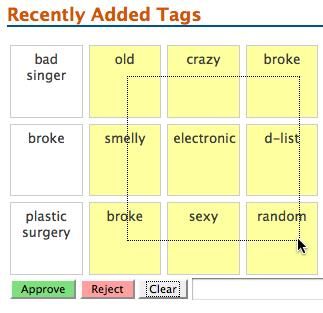
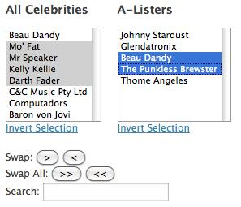
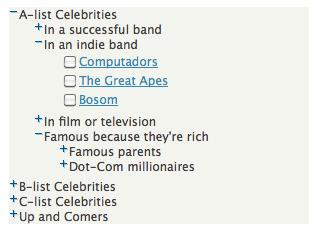
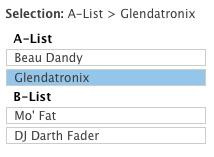
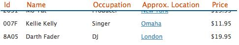
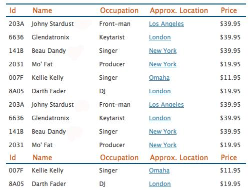
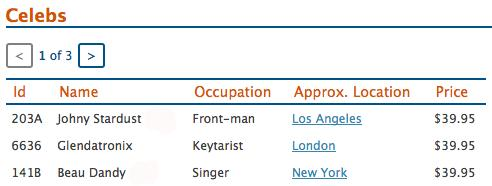
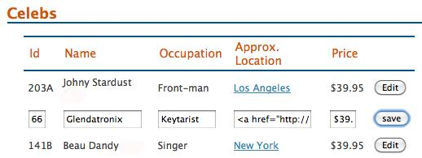

{% include JB/setup %}
{% raw %}
<div>
<div class="calibre3"></div><div class="toc" title="Chapter 8Lists, Trees, and Tables"><div class="toc"><div class="toc"><div class="toc"><div class="calibre3"></div><h1 class="title"><a xmlns:saxon="http://icl.com/saxon" id="chapter_lists" class="calibre5"></a><span xmlns:d="http://docbook.org/ns/docbook" class="sitepoint-chapter-titlepage-label">Chapter <span class="sitepoint-chapter-titlepage-number">8</span></span><br xmlns:d="http://docbook.org/ns/docbook" class="calibre11"/><span xmlns:d="http://docbook.org/ns/docbook" class="calibre5">Lists, Trees, and Tables</span></h1></div></div></div>
  
      

  
      The popularity of StarTrackr! has just skyrocketed, after exposing an
  ill-conceived publicity stunt where a celebrity faked his own death and
  tried to leak the news via Twitter. Thankfully, the celebrity happened to be
  “B-grader of the week” on StarTrackr!, with several users alerting the media
  that his tracking device indicated that he was, in fact, in an exclusive
  local day spa.

  
      The droves of new users and intrigued old-school media types flocking
  to the site have created a tidal wave of data, which the site’s
  administration section is struggling to keep up with. Our client is worried
  that a lack of good information is being promoted in favor of more tabloid
  pursuits, lost in a mountain of unstructured lists and tables.

  
      The admin area of a site is often the most neglected; it’s out of
  sight to the general public, so there is a tendency to cut corners and put
  less thought into usability and the user experience. Out the window can go
  best practices such as progressive enhancement and accessibility (usually
  due to extremely tight deadlines, mind you!).

  
      But the rise of the <a id="ch08-001"></a>Rich Internet Application (RIA) is changing that. Clients
  expect our web-based systems to rival their desktop applications for
  usability and design. Thankfully with jQuery by our side, that’s no
  problem!

  
      <div class="toc" title="Lists"><div class="toc"><div class="toc"><div class="toc"><h2 class="title1"><a xmlns:saxon="http://icl.com/saxon" id="d4e10341" class="calibre5"></a>Lists</h2></div></div></div>
    
         

    
         
            <a id="ch08-002"></a>Lists are the real unsung heroes of the post table-based
    layout period of the Web. As designers were freed from the constraints of
    the tyrannical table cell, they started to look for other semantically
    correct ways to recreate common user interface elements such as menus,
    navigation panels, tag clouds, and so on. And time after time, as the
    redundant layout cruft was stripped from the underlying data, all that was
    left behind was … a list!

    
         The StarTrackr! site is already home to an extensive array of lists:
    they form the basis of our tabs, accordions, menus, image galleries, and
    more, but there’s far more we can do to augment and enhance the humble
    list.

    
         <div class="toc" title="jQuery UI Selectables"><div class="toc"><div class="toc"><div class="toc"><h3 class="title2"><a xmlns:saxon="http://icl.com/saxon" id="d4e10348" class="calibre5"></a>jQuery UI Selectables<a id="ch08-003a" class="calibre5"></a>
               <a id="ch08-003xx" class="calibre5"></a>
               <a id="ch08-003xxx" class="calibre5"></a>
               <a id="ch08-003" class="calibre5"></a>
            </h3></div></div></div>
      
            

      
            The ocean of user-generated content is proving a handful for our
      client. Thousands of tags are pouring in from the site’s users, but now
      the client’s legal department is saying that the manager—who also
      happens to be on our client team—has to approve every single one
      manually, to avoid a repeat of a recent nasty litigation.

      
            Because the site employs an unconstrained tag system, there are
      stacks of duplicate tags in the lists. And with the current system, that
      means stacks of extra administration. What the client really wants is a
      way to easily see tags, select them (and any duplicates), and click a
      button to approve or reject them.

      
            Our plan of attack is to add jQuery UI’s
      <code class="email">selectable</code> behavior to our list. Making an
      element selectable gives the user the ability to <a id="ch08-004"></a>lasso any of the element’s children to select them: if you
      click on one element and then drag over subsequent elements, they are
      <span><em class="calibre8">all</em></span> highlighted. You can then process the selection
      however you see fit. Perfect for administrating boring lists! The
      behavior we’re aiming to create is illustrated in <a href="ch08.html#fig_jquery_ui_selectable" title="Figure 8.1. Selectable list items">Figure 8.1</a>.

      
            <div class="toc"><a xmlns:saxon="http://icl.com/saxon" id="fig_jquery_ui_selectable"></a><div class="figure-contents">
        
               

        
               <div class="figure-contents"></div>
      
            </div><p xmlns:l="http://docbook.sourceforge.net/xmlns/l10n/1.0" xmlns:d="http://docbook.org/ns/docbook" class="title4">Figure 8.1. Selectable list items<a id="ch08-003af"></a>
                  <a id="ch08-003f"></a>
               </p></div>

      
            In addition to lassoing, the selectable behavior also lets you add
      <a id="ch08-005"></a>nonsequential items to the list using the
      <span><strong class="calibre9">Ctrl</strong></span> key (as you can do in most desktop
      applications).

      
            <div class="tip" title="Tip: Keep Your Users in the Loop"><h3 class="title2">Tip: Keep Your Users in the Loop</h3>
        
               

        
               Although being able to click and drag selections on a list is
        very cool and useful, it’s only cool and useful if your users know
        about it. Making selections in this manner is a nonstandard form of
        interaction on the Web, so you’ll need to provide instructions to your
        users about how to use your new functionality.
      
            </div>

      
            Let’s have a look at the markup. The server spits out a long list
      of tags, which is a fine base for our selector grid. We’ll also throw in
      a few buttons that allow users to approve or reject the tags in their
      selection, as well as a button to reset the selection:

      
            <div class="toc"><a xmlns:saxon="http://icl.com/saxon" id="d4e10394"></a><div xmlns:l="http://docbook.sourceforge.net/xmlns/l10n/1.0" xmlns:d="http://docbook.org/ns/docbook" class="sitepoint-formal-example-heading"><em class="calibre8" title="chapter_08/01_jquery_ui_selectable/index.html (excerpt)">
		
                  <span class="sitepoint-formal-example-filename"><span>chapter_08/01_jquery_ui_selectable/index.html</span></span>
        (excerpt)
	</em></div><div class="toc">
        
               

        
               <pre class="programlisting">&lt;ul id="tags"&gt;
  &lt;li&gt;bad singer&lt;/li&gt;
  &lt;li&gt;old&lt;/li&gt;
  &lt;li&gt;plastic surgery&lt;/li&gt;
  &lt;li&gt;broke&lt;/li&gt;
  …
&lt;/ul&gt;
&lt;button id="approve"&gt;Approve&lt;/button&gt;
&lt;button id="reject"&gt;Reject&lt;/button&gt;
&lt;button id="clear"&gt;Clear&lt;/button&gt;</pre>
      
            </div></div>

      
            A big long list is a bit intimidating, so we’ll use some basic CSS
      to make the list into a <a id="ch08-006"></a>grid, and convert each tag into a small
      box:<pre class="programlisting">#tags {  
list-style-type: none;  
margin: 0;  
padding: 0;  
} 

#tags li {
border: 1px solid #ccc; 
float: left;  
width: 60px;  
height: 60px;  
font-size:1.1em; 
margin:3px; 
padding:0.4em; 
text-align:center; 
}</pre>With our grid ready to go, we have to add the jQuery UI
      library to the page. Now it’s time to tell the tag list to become
      selectable:

      
            <div class="toc"><a xmlns:saxon="http://icl.com/saxon" id="d4e10402"></a><div xmlns:l="http://docbook.sourceforge.net/xmlns/l10n/1.0" xmlns:d="http://docbook.org/ns/docbook" class="sitepoint-formal-example-heading"><em class="calibre8" title="chapter_08/01_jquery_ui_selectable/script.js (excerpt)">
		
                  <span class="sitepoint-formal-example-filename"><span>chapter_08/01_jquery_ui_selectable/script.js</span></span>
        (excerpt)
	</em></div><div class="toc">
        
               

        
               <pre class="programlisting">$("#tags").selectable();</pre>
      
            </div></div>

      
            Fire up your browser and check it out. Hrrm … has anything
      actually happened? Well, yes, it has, but it’s invisible. The
      <code class="email">selectable</code> method works by adding <code class="email">class</code> attributes to selected items, so
      unless we assign styles to those <code class="email">class</code>es, we’ll be unable to see anything
      happening. If you inspect the list items with Firebug as you select
      them, you’ll see the changes occurring. Let’s have a stab at styling
      selected elements:

      
            <div class="toc"><a xmlns:saxon="http://icl.com/saxon" id="d4e10410"></a><div xmlns:l="http://docbook.sourceforge.net/xmlns/l10n/1.0" xmlns:d="http://docbook.org/ns/docbook" class="sitepoint-formal-example-heading"><em class="calibre8" title="chapter_08/01_jquery_ui_selectable/style.css (excerpt)">
		
                  <span class="sitepoint-formal-example-filename"><span>chapter_08/01_jquery_ui_selectable/style.css</span></span>
        (excerpt)
	</em></div><div class="toc">
        
               

        
               <pre class="programlisting">#tags .ui-selecting { 
  background: #FEFF9F; 
}

#tags .ui-selected { 
  background-color:#eEeF8F; 
}</pre>
      
            </div></div>

      
            The <a id="ch08-007"></a>
               <code class="email">ui-selecting</code> 
               <code class="email">class</code> is applied as the user is in the
      process of selecting elements, and the <a id="ch08-008"></a>
               <code class="email">ui-selected</code> 
               <code class="email">class</code> is added as soon as they stop. If you
      try it now, you’ll see you can lasso some squares. It’s quite a natural
      interaction, which is exactly what you want from your page components.
      You can also click while holding down the <span><strong class="calibre9">Ctrl</strong></span> key to
      select individual items.<a id="d4e10426"></a>
               <a id="d4e10427"></a>
            

      
            
               <a id="ch08-009"></a>
               <a id="ch08-009a"></a>Our next task is to help with the duplicate tags. In a
      tagging system, the number of tags for each term is important; so,
      rather than just deleting duplicates, we’ll write some code to select
      any tags that match the user’s selection. For instance, if a user clicks
      on “A-lister,” all the “A-lister” tags will be highlighted.

      
            
               <a id="ch08-010"></a>We need to know which events we can hook into from the
      jQuery UI component. Consulting <a href="http://docs.jquery.com/UI/Selectable">the documentation,</a>
      we’re able to capture the <a id="ch08-011"></a>
               <code class="email">start</code>, <a id="ch08-012"></a>
               <code class="email">stop</code>, <a id="ch08-013"></a>
               <code class="email">selecting</code>, <a id="ch08-014"></a>
               <code class="email">unselecting</code>, <a id="ch08-015"></a>
               <code class="email">selected</code>, and <a id="ch08-016"></a>
               <code class="email">unselected</code> events. We could capture the
      <code class="email">selecting</code> event and remove duplicates as the user
      moves the mouse, but it might be a bit confusing. We’ll stick with the
      <code class="email">stop</code> event, which fires as soon as the user completes
      the selection:

      
            <div class="toc"><a xmlns:saxon="http://icl.com/saxon" id="d4e10468"></a><div xmlns:l="http://docbook.sourceforge.net/xmlns/l10n/1.0" xmlns:d="http://docbook.org/ns/docbook" class="sitepoint-formal-example-heading"><em class="calibre8" title="chapter_08/01_jquery_ui_selectable/script.js (excerpt)">
		
                  <span class="sitepoint-formal-example-filename"><span>chapter_08/01_jquery_ui_selectable/script.js</span></span>
        (excerpt)
	</em></div><div class="toc">
        
               

        
               <pre class="programlisting">$('#tags').selectable({
  stop: function() {
    // The user stopped selecting!
  }
});</pre>
      
            </div></div>

      
            Now we can begin our quest to find the duplicate tags. Our general
      approach will be to make a list of all the tags the user has selected,
      then search for any duplicates of those tags that appear in the greater
      tag list:

      
            <div class="toc"><a xmlns:saxon="http://icl.com/saxon" id="d4e10473"></a><div xmlns:l="http://docbook.sourceforge.net/xmlns/l10n/1.0" xmlns:d="http://docbook.org/ns/docbook" class="sitepoint-formal-example-heading"><em class="calibre8" title="chapter_08/01_jquery_ui_selectable/script.js (excerpt)">
		
                  <span class="sitepoint-formal-example-filename"><span>chapter_08/01_jquery_ui_selectable/script.js</span></span>
        (excerpt)
	</em></div><div class="toc">
        
               

        
               <pre class="programlisting">var names = $.map($('.ui-selected, this'), function(element, i) {
  return $(element).text();
});

$('li', this)
  .filter(function() {
    return ($.inArray($(this).text(), names) != -1);  })
  .addClass('ui-selected');</pre>
      
            </div></div>

      
            To find the duplicates, we’ve called on the service of an
      assortment of new jQuery features, so hold on to your hats!

      
            The first of these is the oddest: <code class="email">$('.ui-selected',
      this)</code>. This looks like a regular jQuery selector, but there’s
      a second parameter. It turns out that the complete definition for the
      jQuery selector is actually <code class="email">$(expression, context)</code>;
      we’ve just been omitting the second parameter. The <a id="ch08-017"></a>
               <a id="ch08-017a"></a>
               <code class="email">context</code> defines where jQuery should
      look for your selector; by default, it looks everywhere on the page, but
      by specifying our unordered list as the context, the expression will be
      limited to elements inside the list.<a id="d4e10489"></a>
               <a id="d4e10490"></a>
            

      
            <div class="toc" title="$.map and $.inArray"><div class="toc"><div class="toc"><div class="toc"><h4 class="title3"><a xmlns:saxon="http://icl.com/saxon" id="d4e10491"></a>
                  <code class="email">$.map</code> and
        <code class="email">$.inArray</code>
                  <a id="ch08-018"></a>
                  <a id="ch08-018a"></a>
               </h4></div></div></div>
        
               

        
               
                  <a id="ch08-019"></a>Next we use a couple of jQuery utility methods to juggle
        the list items: <code class="email">$.map</code> and
        <code class="email">$.inArray</code>. The utility methods jQuery
        provides are mostly for working on JavaScript arrays, and that’s what
        we’re doing here. First, we create an array called
        <code class="email">names</code>, which we populate using the
        <code class="email">$.map</code> method.

        
               The <code class="email">$.map</code> method allows you to take
        each element in the array, process it in some manner, and return the
        results as a new array. You use it when you want to transform every
        element in the same way. We want to transform our jQuery selection
        into a simple list of tag text, so we pass in the selection, and
        define an anonymous function to return each element’s text. Hey
        presto: an array of tag text!

        
               The <code class="email">map</code> function can also be used
        directly on a selection, where we could rewrite the name-grabbing code
        like so:<pre class="programlisting">var names = $('.ui-selected, this').map(function(i, element){
  return $(element).text();
});</pre>
               

        
               
                  <div class="tip" title="Note: map, filter, and Friends"><h3 class="title2">Note: 
                        <code class="literal">map</code>,
            <code class="literal">filter</code>, and Friends</h3>
            
                     

            
                     The <code class="email">map</code> and <a id="ch08-020"></a>
                        <code class="email">filter</code> functions are
            examples of <span><em class="calibre8">
                           <a id="ch08-021"></a>higher order functions</em></span>; that is, they are
            functions that take functions as parameters to apply to our lists.
            Providing a conventional interface to list manipulation is quite
            powerful: it lets you transform your data in a simple, readable
            manner. In fact, the <code class="email">map</code> and
            <code class="email">filter</code> operations (as well as a bunch of
            other iteration methods) have been added to the <a href="https://developer.mozilla.org/en/JavaScript/Reference/Global_Objects/Array">recent
            versions of JavaScript.</a> 
                        <a id="d4e10532"></a>
                     
          
                  </div>
                  <a id="ch08-0229"></a>We next use the context trick as before to retrieve all
        the list item elements, and filter them based on whether or not
        they’re duplicates. Our <code class="email">filter</code> function uses
        the <code class="email">$.inArray</code> utility method, which searches an
        array (but only plain JavaScript arrays, not jQuery selections) for a
        specified value. Given an array and a search term, like
        <code class="email">$.inArray(value, array)</code>, it will return the value’s
        index in the array. Helpfully, it will return <code class="email">-1</code> if
        the value is <span><em class="calibre8">not</em></span> found in the array. Remember
        that <code class="email">filter</code> expects us to return either
        <code class="email">true</code> or <code class="email">false</code>—so we just check
        to see if <a id="ch08-022"></a>
                  <code class="email">$.inArray</code> returns
        <code class="email">-1</code>, and return <code class="email">true</code> or
        <code class="email">false</code> as appropriate. Using
        <code class="email">filter</code> in this way allows us to search our
        array of tag texts for each list item’s text; if it’s in there, it’s a
        duplicate, so we return it to the filter to be selected.<a id="d4e10552"></a>
                  <a id="d4e10553"></a>
                  <a id="d4e10554"></a>
               
      
            </div>

      
            <div class="toc" title="Accessing the Data"><div class="toc"><div class="toc"><div class="toc"><h4 class="title3"><a xmlns:saxon="http://icl.com/saxon" id="d4e10555"></a>Accessing the Data<a id="ch08-023a"></a>
                  <a id="ch08-023"></a>
               </h4></div></div></div>
        
               

        
               Now that we can make selections, how can we use them? The jQuery
        UI Selectable component works with class names, so we will too. To
        acquire the list of selected values, we simply search for any items
        that have the <code class="email">ui-selected</code> 
                  <code class="email">class</code> on them:

        
               <div class="toc"><a xmlns:saxon="http://icl.com/saxon" id="d4e10567"></a><div xmlns:l="http://docbook.sourceforge.net/xmlns/l10n/1.0" xmlns:d="http://docbook.org/ns/docbook" class="sitepoint-formal-example-heading"><em class="calibre8" title="chapter_08/01_jquery_ui_selectable/script.js (excerpt)">
		
                     <span class="sitepoint-formal-example-filename"><span>chapter_08/01_jquery_ui_selectable/script.js</span></span>
          (excerpt)
	</em></div><div class="toc">
          
                  

          
                  <pre class="programlisting">$('#approve').click(function() {
  $('#tags')
    .find('.ui-selected')
    .addClass('approve')
    .removeClass('ui-selected reject');
});

$('#reject').click(function() {
  $('#tags')
    .find('.ui-selected')
    .addClass('reject')
    .removeClass('ui-selected approve');
});

$('#clear').click(function() {
  $('#tags')
    .find('li')
    .removeClass('ui-selected approve reject');
  $('#approved').val('');
});</pre>
        
               </div></div>

        
               We’re just adding an <code class="email">approve</code>
        or <code class="email">reject</code> 
                  <code class="email">class</code> when the user clicks on our buttons,
        also being sure to remove the <code class="email">ui-selected</code> 
                  <code class="email">class</code>, since we want to style approved
        tags differently from selected ones.

        
               But what if we wanted to, say, send this information to the
        server? Perhaps it would be good to store the list of approved tags in
        a <a id="ch08-024"></a>
                  <a id="ch08-024a"></a>
                  <a id="ch08-024b"></a>hidden form field, so that the server can access it for
        processing. Let’s update the <code class="email">#approve</code> click handler
        to iterate over the approved items, and append each item’s index to a
        hidden field in a simple pipe-delimited format:

        
               <div class="toc"><a xmlns:saxon="http://icl.com/saxon" id="d4e10588"></a><div xmlns:l="http://docbook.sourceforge.net/xmlns/l10n/1.0" xmlns:d="http://docbook.org/ns/docbook" class="sitepoint-formal-example-heading"><em class="calibre8" title="chapter_08/01_jquery_ui_selectable/script.js (excerpt)">
		
                     <span class="sitepoint-formal-example-filename"><span>chapter_08/01_jquery_ui_selectable/script.js</span></span>
          (excerpt)
	</em></div><div class="toc">
          
                  

          
                  <pre class="programlisting">$('#approve').click(function() {
  <span><strong class="calibre9">var approvedItems = "";</strong></span>
  $('#tags')
    .find('.ui-selected')
    .addClass('approve')
    .removeClass('ui-selected reject')
    <span><strong class="calibre9">.each(function() {
      approvedItems += $(this).index() + "|";
    });</strong></span>
  
                     <span><strong class="calibre9">$('#approved').val(approvedItems);</strong></span>
});</pre>
        
               </div></div>

        
               
                  <a id="ch08-025"></a>We’ll also add a line to our <code class="email">#clear</code>
        button click handler to clear that input’s value:

        
               <div class="toc"><a xmlns:saxon="http://icl.com/saxon" id="d4e10600"></a><div xmlns:l="http://docbook.sourceforge.net/xmlns/l10n/1.0" xmlns:d="http://docbook.org/ns/docbook" class="sitepoint-formal-example-heading"><em class="calibre8" title="chapter_08/01_jquery_ui_selectable/script.js (excerpt)">
		
                     <span class="sitepoint-formal-example-filename"><span>chapter_08/01_jquery_ui_selectable/script.js</span></span>
          (excerpt)
	</em></div><div class="toc">
          
                  

          
                  <pre class="programlisting">$('#approved').val('');</pre>
        
               </div></div>

        
               Thanks to the <a id="ch08-026"></a>
                  <code class="email">index</code> method, we now know which
        items in the list have been approved. <code class="email">index</code>
        will tell you an item’s position inside its parent <a id="ch08-027"></a>element. Our control is impressive in how easy it is to
        use. The jQuery UI Selectable plugin is doing a lot of work behind the
        scenes to allow lists to be selectable, but the end result is a
        natural-feeling component, and that’s exactly what we want.<a id="d4e10613"></a>
                  <a id="d4e10614"></a>
               
      
            </div>
    
         </div>

    
         <div class="toc" title="Sorting Lists"><div class="toc"><div class="toc"><div class="toc"><h3 class="title2"><a xmlns:saxon="http://icl.com/saxon" id="d4e10615" class="calibre5"></a>Sorting Lists<a id="ch08-028" class="calibre5"></a>
               <a id="ch08-028a" class="calibre5"></a>
            </h3></div></div></div>
      
            

      
            With the tag system under control, it’s time to turn to some of
      the other lists that are scattered throughout the admin section. Many of
      these lists are populated by the server in the order they were entered
      into the system. This is handy for seeing what’s new, but bad for
      finding particular items. Our client has asked us to build some sorting
      capabilities into all the lists in the admin section, so that they can
      be sorted in ascending or descending alphabetical order with the click
      of a button.

      
            The markup consists of simple unordered lists, each containing a
      link:

      
            <div class="toc"><a xmlns:saxon="http://icl.com/saxon" id="d4e10624"></a><div xmlns:l="http://docbook.sourceforge.net/xmlns/l10n/1.0" xmlns:d="http://docbook.org/ns/docbook" class="sitepoint-formal-example-heading"><em class="calibre8" title="chapter_08/02_sorting_lists/index.html (excerpt)">
		
                  <span class="sitepoint-formal-example-filename"><span>chapter_08/02_sorting_lists/index.html</span></span>
        (excerpt)
	</em></div><div class="toc">
        
               

        
               <pre class="programlisting">&lt;ul class="sortable"&gt;
  &lt;li&gt;&lt;a href="#"&gt;Beau Dandy&lt;/a&gt;&lt;/li&gt;
  &lt;li&gt;&lt;a href="#"&gt;Glendatronix&lt;/a&gt;&lt;/li&gt;
  &lt;li&gt;&lt;a href="#"&gt;BMX Spandex Corporation&lt;/a&gt;&lt;/li&gt;
  &lt;li&gt;&lt;a href="#"&gt;Maxwell Zilog&lt;/a&gt;&lt;/li&gt;
  &lt;li&gt;&lt;a href="#"&gt;Computadors&lt;/a&gt;&lt;/li&gt;
&lt;/ul&gt;</pre>
      
            </div></div>

      
            jQuery objects lack any built-in sorting functionality. This makes
      sense: a selection could include various kinds of elements located in
      different parts of the page, so sorting them in a consistent manner
      would be impossible. Therefore, to sort our jQuery selections, we need
      to fall back on some JavaScript array methods. jQuery selections aren’t
      actually arrays, but they’re “array-like,” and they allow us to use the
      JavaScript <a id="ch08-029"></a>
               <code class="email">sort</code> function on them.

      
            We’ll try to build a reusable list-sorting widget. We’ll call it
      <code class="email">SORTER</code>, and then call
      <code class="email">SORTER.sort(list)</code> to sort a list in ascending order,
      and <code class="email">SORTER.sort(list, 'desc')</code> to sort in descending
      order. We’ll assume that the selector passed in will match ordered or
      unordered lists, but let’s see if we can make that happen:

      
            <div class="toc"><a xmlns:saxon="http://icl.com/saxon" id="d4e10637"></a><div xmlns:l="http://docbook.sourceforge.net/xmlns/l10n/1.0" xmlns:d="http://docbook.org/ns/docbook" class="sitepoint-formal-example-heading"><em class="calibre8" title="chapter_08/02_sorting_lists/script.js (excerpt)">
		
                  <span class="sitepoint-formal-example-filename"><span>chapter_08/02_sorting_lists/script.js</span></span>
        (excerpt)
	</em></div><div class="toc">
        
               

        
               <pre class="programlisting">var SORTER = {};
SORTER.sort = function(which, dir) {
  SORTER.dir = (dir == "desc") ? -1 : 1;
  $(which).each(function() {
    // Find the list items and sort them
    var sorted = $(this).find("&gt; li").sort(function(a, b) {
      return $(a).text().toLowerCase() &gt; $(b).text().toLowerCase() ? 
↵SORTER.dir : -SORTER.dir; 
    });
    $(this).append(sorted);
  });
};</pre>
      
            </div></div>

      
            That code is deceptively short, because it happens to be doing a
      lot. First up, we check to see if <code class="email">desc</code> was passed in
      as the <code class="email">dir</code> parameter, and set the
      <code class="email">SORTER.dir</code> variable accordingly. All we need to do is
      grab all the first-level child list elements and give them a sort. We
      only want the first-level items; if we grabbed further levels, they’d be
      sorted and dragged up to the parent level. Because calling
      <code class="email">sort</code> reverts our selections to raw JavaScript,
      we need to rewrap them in the <code class="email">$()</code> to be able to call
      the jQuery <code class="email">text</code> method and compare their
      values. We also convert the values to <a id="ch08-030"></a>lowercase, which makes the sorting
      case-insensitive.

      
            <div class="tip" title="Note: The sort Function"><h3 class="title2">Note: The <code class="literal">sort</code> Function</h3>
        
               

        
               The <code class="email">sort</code> function is plain old
        JavaScript. It sorts an <a id="ch08-031"></a>array based on either default rules such as sorting
        numerically for numbers and alphabetically for strings, or by the
        results of the function you pass to it. <code class="email">sort</code>
        will go over the contents of the array and pass them to your function
        in pairs. If your function returns <code class="email">1</code>,
        <code class="email">sort</code> will swap the items and place the second
        one first. If your function returns <code class="email">-1</code>, JavaScript
        will put the first item first. Finally, if your function returns
        <code class="email">0</code>, <code class="email">sort</code> will consider that
        both items are equal and no sorting will take place.
      
            </div>

      
            We’re doing a little magic to let us use the same function for
      sorting in ascending and descending order. We’ve set our
      <code class="email">SORTER.dir</code> variable to <code class="email">-1</code> or
      <code class="email">1</code>, depending on the direction. Then in the
      <code class="email">sort</code> comparison function, we perform a further
      calculation: if <code class="email">a</code> is less than <code class="email">b</code>,
      we return <code class="email">-SORTER.dir</code>. If the direction comes in as
      <code class="email">-1</code>, we process it as <code class="email">-(-1)</code>, which
      is <code class="email">1</code>; so if we’re trying to sort descending, the
      return values are swapped.<a id="d4e10675"></a>
            

      
            Once we’ve sorted the items, we can reinsert them into the list in
      the correct order. Remember, the <code class="email">append</code>
      function removes the element first, so it removes the item and appends
      it in the correct position.

      
            To test it out, we’ll add some buttons to our HTML and call
      <code class="email">SORTER.sort</code> from their
      <code class="email">click</code> event handlers:

      
            <div class="toc"><a xmlns:saxon="http://icl.com/saxon" id="d4e10681"></a><div xmlns:l="http://docbook.sourceforge.net/xmlns/l10n/1.0" xmlns:d="http://docbook.org/ns/docbook" class="sitepoint-formal-example-heading"><em class="calibre8" title="chapter_08/02_sorting_lists/script.js (excerpt)">
		
                  <span class="sitepoint-formal-example-filename"><span>chapter_08/02_sorting_lists/script.js</span></span>
        (excerpt)
	</em></div><div class="toc">
        
               

        
               <pre class="programlisting">$('#ascending').click(function() {
  SORTER.sort('.sortable');
});
$('#descending').click(function() {
  SORTER.sort('.sortable', 'desc');
});</pre>

        
               <a id="d4e10685"></a>

        
               <a id="d4e10686"></a>
      
            </div></div>
    
         </div>

    
         <div class="toc" title="Manipulating Select Box Lists"><div class="toc"><div class="toc"><div class="toc"><h3 class="title2"><a xmlns:saxon="http://icl.com/saxon" id="d4e10687" class="calibre5"></a>Manipulating Select Box Lists</h3></div></div></div>
      
            

      
            
               <a id="ch08-032"></a>Although we covered forms in the previous chapter, it’s
      definitely worth taking a look at certain form elements in the context
      of lists. Here we’re going to examine <code class="email">select</code> elements, especially those with
      <code class="email">multiple="multiple"</code> (that is, select boxes which
      appear as selectable lists of items).

      
            <div class="toc" title="Swapping List Elements"><div class="toc"><div class="toc"><div class="toc"><h4 class="title3"><a xmlns:saxon="http://icl.com/saxon" id="d4e10695"></a>Swapping List Elements<a id="ch08-033"></a>
                  <a id="ch08-033a"></a>
               </h4></div></div></div>
        
               

        
               The StarTrackr! client has asked us to improve the admin
        functionality for assigning celebrities to the A-list. The current
        functionality consists of two <code class="email">select</code> elements: one contains A-list
        celebrities, and one has every other celebrity in the system. Yet fame
        is extremely fickle, and an A-lister today can be a nobody tomorrow,
        so the client wants to be able to easily swap the celebrities between
        lists. We’ll add a few controls to the interface to enable this, as
        shown in <a href="ch08.html#fig_select_boxes" title="Figure 8.2. List boxes with controls">Figure 8.2</a>.

        
               <div class="toc"><a xmlns:saxon="http://icl.com/saxon" id="fig_select_boxes"></a><div class="figure-contents">
          
                  

          
                  <div class="figure-contents"></div>
        
               </div><p xmlns:l="http://docbook.sourceforge.net/xmlns/l10n/1.0" xmlns:d="http://docbook.org/ns/docbook" class="title4">Figure 8.2. List boxes with controls<a id="ch08-033f"></a>
                  </p></div>

        
               This is the HTML we’re dealing with, consisting of the two
        <code class="email">select</code> elements and a few buttons
        for performing various operations:

        
               <div class="toc"><a xmlns:saxon="http://icl.com/saxon" id="d4e10716"></a><div xmlns:l="http://docbook.sourceforge.net/xmlns/l10n/1.0" xmlns:d="http://docbook.org/ns/docbook" class="sitepoint-formal-example-heading"><em class="calibre8" title="chapter_08/03_select_lists/index.html (excerpt)">
		
                     <span class="sitepoint-formal-example-filename"><span>chapter_08/03_select_lists/index.html</span></span>
          (excerpt)
	</em></div><div class="toc">
          
                  

          
                  <pre class="programlisting">&lt;select id="candidates" multiple="multiple" size="8"&gt;
  &lt;option value="142"&gt;Beau Dandy&lt;/option&gt;
  …
&lt;/select&gt;
&lt;select id="a-listers" multiple="multiple" size="8"&gt;
  &lt;option value="232"&gt;Johnny Stardust&lt;/option&gt;
  …
&lt;/select&gt;
&lt;div id="controls"&gt;
  &lt;input type="button" id="swapLeft" value="&amp;gt;" /&gt;
  &lt;input type="button" id="swapRight" value="&amp;lt;" /&gt;
  …
&lt;/div&gt;</pre>
        
               </div></div>

        
               As we said, the client wants the ability to swap selected items
        from one list to another. We’ll make a <code class="email">SWAPLIST</code>
        object that will contain all the functionality we’ll build. This can
        then be reused anytime we need to play with <code class="email">select</code> elements:

        
               <div class="toc"><a xmlns:saxon="http://icl.com/saxon" id="d4e10723"></a><div xmlns:l="http://docbook.sourceforge.net/xmlns/l10n/1.0" xmlns:d="http://docbook.org/ns/docbook" class="sitepoint-formal-example-heading"><em class="calibre8" title="chapter_08/03_select_lists/script.js (excerpt)">
		
                     <span class="sitepoint-formal-example-filename"><span>chapter_08/03_select_lists/script.js</span></span>
          (excerpt)
	</em></div><div class="toc">
          
                  

          
                  <pre class="programlisting">var SWAPLIST = {};
SWAPLIST.swap = function(from, to) {
  $(from)
    .find(':selected')
    .appendTo(to);
}</pre>
        
               </div></div>

        
               We’ve defined a <code class="email">swap</code> function that
        accepts selector strings targeting two lists: a source list and a
        destination list. The first task we want to do is to grab any items
        that are currently selected. We can do this using the <a id="ch08-034"></a>
                  <code class="email">find</code> action with the <a id="ch08-035"></a>
                  <a id="ch08-035a"></a>
                  <code class="email">:selected</code> form filter. This filter
        will return any form elements that have the attribute <code class="email">selected</code> set. Then we can move the
        selection over to the destination list with
        <code class="email">appendTo</code>. Easy! And once we’ve defined this
        functionality, we can apply it to any two lists by calling our
        <code class="email">swap</code> method from appropriate click
        handlers:

        
               <div class="toc"><a xmlns:saxon="http://icl.com/saxon" id="d4e10744"></a><div xmlns:l="http://docbook.sourceforge.net/xmlns/l10n/1.0" xmlns:d="http://docbook.org/ns/docbook" class="sitepoint-formal-example-heading"><em class="calibre8" title="chapter_08/03_select_lists/script.js (excerpt)">
		
                     <span class="sitepoint-formal-example-filename"><span>chapter_08/03_select_lists/script.js</span></span>
          (excerpt)
	</em></div><div class="toc">
          
                  

          
                  <pre class="programlisting">$('#swapLeft').click(function() {
  SWAPLIST.swap('#candidates', '#a-listers');
});
$('#swapRight').click(function() {
  SWAPLIST.swap('#a-listers', '#candidates');
});</pre>
        
               </div></div>

        
               Now selected items can be swapped back and forth at will! Let’s
        add some more functionality to our <code class="email">SWAPLIST</code> object.
        How about swapping <span><em class="calibre8">all</em></span> elements? That’s even
        easier:

        
               <div class="toc"><a xmlns:saxon="http://icl.com/saxon" id="d4e10751"></a><div xmlns:l="http://docbook.sourceforge.net/xmlns/l10n/1.0" xmlns:d="http://docbook.org/ns/docbook" class="sitepoint-formal-example-heading"><em class="calibre8" title="chapter_08/03_select_lists/script.js (excerpt)">
		
                     <span class="sitepoint-formal-example-filename"><span>chapter_08/03_select_lists/script.js</span></span>
          (excerpt)
	</em></div><div class="toc">
          
                  

          
                  <pre class="programlisting">SWAPLIST.swapAll = function(from,to) {
  $(from)
    .children()
    .appendTo(to);
}</pre>
        
               </div></div>

        
               We just take all the child elements (instead of only the
        selected elements) and append them to the bottom of the destination.
        The whole list jumps from source list to destination list.<a id="d4e10756"></a>
                  <a id="d4e10757"></a>
               
      
            </div>

      
            <div class="toc" title="Inverting a Selection"><div class="toc"><div class="toc"><div class="toc"><h4 class="title3"><a xmlns:saxon="http://icl.com/saxon" id="d4e10758"></a>Inverting a Selection<a id="ch08-036"></a>
                  <a id="ch08-036a"></a>
               </h4></div></div></div>
        
               

        
               The next client request is to add a button that inverts the
        current selection, to make it easier for staff when dealing with large
        selections. When this link is clicked, all currently selected items in
        the target list become deselected, and vice versa. Let’s create a
        function inside the <code class="email">SWAPLIST</code> object that does
        this:

        
               <div class="toc"><a xmlns:saxon="http://icl.com/saxon" id="d4e10768"></a><div xmlns:l="http://docbook.sourceforge.net/xmlns/l10n/1.0" xmlns:d="http://docbook.org/ns/docbook" class="sitepoint-formal-example-heading"><em class="calibre8" title="chapter_08/03_select_lists/script.js (excerpt)">
		
                     <span class="sitepoint-formal-example-filename"><span>chapter_08/03_select_lists/script.js</span></span>
          (excerpt)
	</em></div><div class="toc">
          
                  

          
                  <pre class="programlisting">SWAPLIST.invert = function(list) {
  $(list)
    .children()
    .prop('selected', function(i, selected) {
      return !selected;
    });
}</pre>
        
               </div></div>

        
               All we have to do is retrieve every list item and swap its
        <code class="email">selected</code> property using the <a id="ch08-037"></a>
                  <code class="email">
                     <code class="email">prop</code>
                  </code>
        action. <code class="email">prop</code> is very similar to
        <code class="email">attr</code> (which we’ve seen before), except it is used
        to set <span><em class="calibre8">
                     <a id="ch08-038"></a>properties</em></span>, rather than attributes.
        Generally, if it’s a Boolean
        <code class="email">true</code>/<code class="email">false</code> value, we should use
        <code class="email">prop</code>, but the full list of properties and
        attributes (as well as an in-depth discussion about the two methods)
        can be found on the <a href="http://blog.jquery.com/2011/05/12/jquery-1-6-1-released/">jQuery
        documentation site.</a>
               

        
               We use the <code class="email">prop</code> function to set our
        list items to <code class="email">!$(this).prop('selected')</code>. The
        JavaScript <a id="ch08-039"></a>
                  <a id="ch08-039a"></a>NOT (<code class="email">!</code>) operator (the exclamation
        mark) inverts the Boolean value, so if the value is
        <code class="email">true</code> it becomes <code class="email">false</code>, and if it
        is <code class="email">false</code> it becomes <code class="email">true</code>.

        
               <div class="tip" title="Important: Calling prop with a Function Parameter"><h3 class="title2">Important: Calling <code class="literal">prop</code> with a Function
          Parameter</h3>
          
                  

          
                  This is a great trick: we’ve used the
          <code class="email">prop</code> action and seen it’s similar to the
          <a id="ch08-040"></a>
                     <a id="ch08-040a"></a>
                     <code class="email">attr</code> action, but we’re taking
          advantage of some advanced functionality. Previously, we used the
          <code class="email">attr(key, value)</code> action to set attributes to a
          static value, but <code class="email">prop</code> and
          <code class="email">attr</code> also lets us pass in a
          <span><em class="calibre8">function</em></span> to determine the value to set. The function will be passed
          two parameters: the index of the element and its current value. The
          returned value
          of the function becomes the attribute’s new value. For our
          <code class="email">invert</code> method, we return the opposite of
          the element’s current selection value—so each element is toggled. We
          can do this kind of dynamic processing with stacks of commands:
          <code class="email">text</code>, <code class="email">html</code>,
          <code class="email">val</code>, <code class="email">addClass</code>,
          <code class="email">wrap</code> … and many more!<a id="d4e10823"></a>
                     <a id="d4e10824"></a>
                     <a id="d4e10825"></a>
                     <a id="d4e10826"></a>
                  
        
               </div>
      
            </div>

      
            <div class="toc" title="Searching through Lists"><div class="toc"><div class="toc"><div class="toc"><h4 class="title3"><a xmlns:saxon="http://icl.com/saxon" id="d4e10827"></a>Searching through Lists<a id="ch08-041"></a>
               </h4></div></div></div>
        
               

        
               After having to listen to the client group whine on and on about
        how hard it is to find the celebrities they’re searching for, you
        decide to throw in a little freebie: a quick search feature that lets
        the user type some characters and then automatically select any
        matching elements:

        
               <div class="toc"><a xmlns:saxon="http://icl.com/saxon" id="d4e10833"></a><div xmlns:l="http://docbook.sourceforge.net/xmlns/l10n/1.0" xmlns:d="http://docbook.org/ns/docbook" class="sitepoint-formal-example-heading"><em class="calibre8" title="chapter_08/03_select_lists/script.js (excerpt)">
		
                     <span class="sitepoint-formal-example-filename"><span>chapter_08/03_select_lists/script.js</span></span>
          (excerpt)
	</em></div><div class="toc">
          
                  

          
                  <pre class="programlisting">SWAPLIST.search = function(list, search) {
  $(list)
    .children()
    .prop('selected', false)
    .filter(function() {
      if (!search) {       
        return false;
      }
      return $(this)
        .text()
        .toLowerCase()
        .indexOf(search.toLowerCase()) &gt; - 1
    })
    .prop('selected', true);
}</pre>
        
               </div></div>

        
               What’s going on here? First, we’re grabbing all list items and
        then clearing any previous selections (by setting <code class="email">selected</code> to <code class="email">false</code>).
        Next, we’re using the <code class="email">filter</code> action to find
        any elements we’re searching for.

        
               The <a id="ch08-042"></a>
                  <code class="email">filter</code> action accepts a
        <a id="ch08-042b"></a>
                  <a id="ch08-042a"></a>function as a parameter, and runs that function against
        every jQuery object in the selection. If the function returns
        <code class="email">true</code>, the element stays in the selection. But if
        the function returns <code class="email">false</code>—it’s gone … out of the
        selection, and unaffected by further processing.

        
               To find elements we care about, we check to see if the text they
        contain has the text we’re looking for within it. To do this we use
        the <a id="ch08-043"></a>
                  <code class="email">text</code> action that gives us a
        string. We convert it to lowercase (so the search will be
        case-insensitive), and check to see if our source <a id="ch08-044b"></a>
                  <a id="ch08-044a"></a>
                  <a id="ch08-044"></a>text is located in the element string. The JavaScript
        <a id="ch08-045"></a>
                  <code class="email">indexOf</code> method will find the
        position of a string inside another string; for example,
        <code class="email">"hello".indexOf('ll');</code> will return
        <code class="email">2</code> (the index starts at <code class="email">0</code>, as
        usual). If the substring is not found,
        <code class="email">indexOf</code> will return <code class="email">-1</code>,
        which is what we’re checking for here.

        
               Whichever elements remain in the jQuery selection after the
        <code class="email">filter</code> function runs must contain the keyword
        we’re looking for. Once again, we use the
        <code class="email">prop</code> method to select them.

        
               To use the search method we created, we could attach it to a
        <code class="email">click</code> handler, so the user types a word and then
        clicks a search button. Even better is to attach a
        <code class="email">keyup</code> handler to the <code class="email">input</code> itself, so it selects as you
        type:

        
               <div class="toc"><a xmlns:saxon="http://icl.com/saxon" id="d4e10883"></a><div xmlns:l="http://docbook.sourceforge.net/xmlns/l10n/1.0" xmlns:d="http://docbook.org/ns/docbook" class="sitepoint-formal-example-heading"><em class="calibre8" title="chapter_08/03_select_lists/script.js (excerpt)">
		
                     <span class="sitepoint-formal-example-filename"><span>chapter_08/03_select_lists/script.js</span></span>
          (excerpt)
	</em></div><div class="toc">
          
                  

          
                  <pre class="programlisting">$('#search').keyup(function() {
  SWAPLIST.search("#a-listers, #candidates", $(this).val());
});</pre>

          
                  <a id="d4e10887"></a>
        
               </div></div>
      
            </div>
    
         </div>
  
      </div>

  
      <div class="toc" title="Trees"><div class="toc"><div class="toc"><div class="toc"><h2 class="title1"><a xmlns:saxon="http://icl.com/saxon" id="d4e10888" class="calibre5"></a>Trees</h2></div></div></div>
    
         

    
         
            <a id="ch08-046"></a>“This is another mess. We have several subcategories of
    celebrities—you know, A-listers who are in bands, or who are famous
    because their parents are rich; B-listers who came in second on some
    reality TV contest, stuff like that. Right now, they’re all in one big
    list. I need to see how the categories fit inside each other! Can you
    build something to help me?”

    
         One of the representatives of the client team is talking about a
    tree. Trees are few and far between on the Web for two reasons: they’re
    hard to do well, and there are few situations where they make sense.
    However, a nested set of categories <span><em class="calibre8">is</em></span> a valid use of
    a tree structure (a more common one is representing a directory
    structure), so let’s dive in!

    
         <div class="toc" title="Expandable Tree"><div class="toc"><div class="toc"><div class="toc"><h3 class="title2"><a xmlns:saxon="http://icl.com/saxon" id="d4e10896" class="calibre5"></a>Expandable Tree</h3></div></div></div>
      
            

      
            
               <a id="ch08-047"></a>Here’s the secret about trees: they’re really just nested
      lists. The key to dealing with trees in jQuery is to make sure your HTML
      is consistent; that way we can figure out where we are, and open and
      close the correct branches. The control we’ll build will look like the
      one in <a href="ch08.html#fig_tree" title="Figure 8.3. A basic expandable tree">Figure 8.3</a>. We’ve kept the styling deliberately
      sparse, but as always the potential for improving the appearance is
      limited only by your CSS skills!

      
            <div class="toc"><a xmlns:saxon="http://icl.com/saxon" id="fig_tree"></a><div class="figure-contents">
        
               

        
               <div class="figure-contents"></div>
      
            </div><p xmlns:l="http://docbook.sourceforge.net/xmlns/l10n/1.0" xmlns:d="http://docbook.org/ns/docbook" class="title4">Figure 8.3. A basic expandable tree <a id="ch08-047f"></a>
               </p></div>

      
            The important part of our markup is the span that contains each
      category (or directory) name. We’ll use this span
      as a base for inserting a small plus/minus graphic that acts as the
      branch toggle. Here’s a subset of the markup we’ll be working
      with:

      
            <div class="toc"><a xmlns:saxon="http://icl.com/saxon" id="d4e10912"></a><div xmlns:l="http://docbook.sourceforge.net/xmlns/l10n/1.0" xmlns:d="http://docbook.org/ns/docbook" class="sitepoint-formal-example-heading"><em class="calibre8" title="chapter_08/04_expandable_tree/index.html (excerpt)">
		
                  <span class="sitepoint-formal-example-filename"><span>chapter_08/04_expandable_tree/index.html</span></span>
        (excerpt)
	</em></div><div class="toc">
        
               

        
               <pre class="programlisting">&lt;ul id="celebTree"&gt;
  &lt;li&gt;&lt;span&gt;A-list Celebrities&lt;/span&gt;
    &lt;ul&gt;
      &lt;li&gt;&lt;span&gt;In a successful band&lt;/span&gt;
        &lt;ul&gt;
          &lt;li&gt;Johnny Stardust&lt;/li&gt;
          &lt;li&gt;Glendatronix&lt;/li&gt;
        &lt;/ul&gt;
      &lt;/li&gt;
      …
      &lt;li&gt;&lt;span&gt;Famous because they're rich&lt;/span&gt;
        &lt;ul&gt;
          &lt;li&gt;&lt;span&gt;Dot-Com millionaires&lt;/span&gt;
            &lt;ul&gt;
              &lt;li&gt;Joel Mynor&lt;/li&gt;
              …</pre>
      
            </div></div>

      
            The tree can nest as far as is needed; just repeat the structure
      inside the appropriate child list item. Because it’s nice and
      consistent, you can easily generate the HTML on the server.

      
            With the list on the page, the next step is to pretty it up with
      some CSS. That’s in your court, but our code will add a few extra
      <code class="email">class</code>es you can use to customize
      the display. The <code class="email">handle</code> 
               <code class="email">class</code> will be assigned to the element we’ll
      insert to act as the toggle handle. When a branch of the tree is opened,
      it will receive the <code class="email">opened</code> 
               <code class="email">class</code>; otherwise, it will have the <code class="email">closed</code> 
               <code class="email">class</code>. We’ve used these classes below to add
      a CSS sprite, which will change between a plus sign and a minus
      sign:

      
            <div class="toc"><a xmlns:saxon="http://icl.com/saxon" id="d4e10925"></a><div xmlns:l="http://docbook.sourceforge.net/xmlns/l10n/1.0" xmlns:d="http://docbook.org/ns/docbook" class="sitepoint-formal-example-heading"><em class="calibre8" title="chapter_08/04_expandable_tree/style.css (excerpt)">
		
                  <span class="sitepoint-formal-example-filename"><span>chapter_08/04_expandable_tree/style.css</span></span>
        (excerpt)
	</em></div><div class="toc">
        
               

        
               <pre class="programlisting">.handle { 
  background: transparent url(tree-handle.png) no-repeat left top; 
  display: block; 
  float: left;
  width: 10px; 
  height: 10px;
  cursor: pointer;
}
.closed { background-position: left top; }
.opened { background-position: left -10px; }</pre>
      
            </div></div>

      
            The code for the tree is remarkably simple, thanks to the
      recursive nature of a tree: we just have to do one small piece of code,
      and attach it to each subcategory. Our plan of attack for creating the
      expanding/collapsing tree effect is to first hide all the nested
      <code class="email">ul</code> categories. Then we’ll add in a
      new element before the category title that contains a
      <code class="email">click</code> event handler; this will open and close its
      branch:

      
            <div class="toc"><a xmlns:saxon="http://icl.com/saxon" id="d4e10932"></a><div xmlns:l="http://docbook.sourceforge.net/xmlns/l10n/1.0" xmlns:d="http://docbook.org/ns/docbook" class="sitepoint-formal-example-heading"><em class="calibre8" title="chapter_08/04_expandable_tree/script.js (excerpt)">
		
                  <span class="sitepoint-formal-example-filename"><span>chapter_08/04_expandable_tree/script.js</span></span>
        (excerpt)
	</em></div><div class="toc">
        
               

        
               <pre class="programlisting">$('#celebTree ul')
  .hide()
  .prev('span')
  .before('&lt;span&gt;&lt;/span&gt;')
  .prev()
  .addClass('handle closed')
  .click(function() {
    // plus/minus handle click
  });</pre>
      
            </div></div>

      
            Six chained actions. Bet you’re feeling some of that jQuery power
      coursing through your veins right about now! Here we see where
      consistent markup helps us out. In each subcategory list, we look for
      the previous <code class="email">span</code> element—that’s the
      subcategory title. Then we insert a new <code class="email">span</code> element right before the title.

      
            Because our handle was added before the title, we need to move
      back to it with the <code class="email">prev</code> action. We add the
      <code class="email">handle</code> and <code class="email">closed</code> (it’s closed by default because of the
      <code class="email">hide</code> action) <code class="email">class</code>es to it, and an event handler for when
      it’s clicked.

      
            At this stage the tree will be fully collapsed, with our brand-new
      handle prepended to the titles. All that’s left to do is toggle the
      branches when we click on it:

      
            <div class="toc"><a xmlns:saxon="http://icl.com/saxon" id="d4e10946"></a><div xmlns:l="http://docbook.sourceforge.net/xmlns/l10n/1.0" xmlns:d="http://docbook.org/ns/docbook" class="sitepoint-formal-example-heading"><em class="calibre8" title="chapter_08/04_expandable_tree/script.js (excerpt)">
		
                  <span class="sitepoint-formal-example-filename"><span>chapter_08/04_expandable_tree/script.js</span></span>
        (excerpt)
	</em></div><div class="toc">
        
               

        
               <pre class="programlisting">// plus/minus handle click
$(this)
  .toggleClass('closed opened')
  .nextAll('ul')
  .toggle();</pre>
      
            </div></div>

      
            When the handle is clicked, we toggle the <code class="email">closed</code> and <code class="email">opened</code> 
               <code class="email">class</code>es with <a id="ch08-048"></a>
               <code class="email">toggleClass</code>. If you specify
      multiple <code class="email">class</code> names with
      <code class="email">toggleClass</code>, any specified <code class="email">class</code> that exists on the element is removed,
      and any that are absent from the element are added.

      
            <div class="tip" title="Tip: Advanced toggleClass"><h3 class="title2">Tip: Advanced <code class="literal">toggleClass</code>
               </h3>
        
               

        
               Another neat trick of <code class="email">toggleClass</code> is
        that it accepts a second parameter: a Boolean value that specifies
        whether the <code class="email">class</code> should be added
        or removed. This might sound strange, but it’s a nice shortcut.
        Consider this code:

        
               <pre class="programlisting">if (x == 1) {
  $(this).addClass('opened');
} else {
  $(this).removeClass('opened');
}</pre>

        
               With the <code class="email">toggleClass(class, switch)</code> syntax,
        we can replace the <code class="email">if</code> statement with the following
        concise syntax:

        
               <pre class="programlisting">$(this).toggleClass('opened', x == 1);</pre>

        
               <a id="d4e10972"></a>
      
            </div>

      
            Finding the subcategory that we need to open and close is easy,
      thanks to the <a id="ch08-049"></a>
               <a id="ch08-049a"></a>
               <code class="email">nextAll</code> action. jQuery will check
      the next sibling, see that it’s a <code class="email">span</code> element (the category title), filter it
      out based on our expression, and move to the next sibling … which is a
      <code class="email">ul</code> item. Bingo! We just toggle this
      and the tree swings open and closed.<a id="d4e10984"></a>
            
    
         </div>

    
         <div class="toc" title="Event Delegation"><div class="toc"><div class="toc"><div class="toc"><h3 class="title2"><a xmlns:saxon="http://icl.com/saxon" id="d4e10985" class="calibre5"></a>Event Delegation<a id="ch08-050a" class="calibre5"></a>
               <a id="ch08-050" class="calibre5"></a>
            </h3></div></div></div>
      
            

      
            
               <span><strong class="calibre9">Event delegation</strong></span> is a topic that’s
      applicable in jQuery, but is particularly important if you’re dealing
      with large trees. The idea is that instead of applying individual event
      handlers to every node in your tree, you apply a single event handler to
      intercept the click. Then you figure out who the click was aimed at and
      run the action.

      
            We covered the <a id="ch08-051"></a>
               <code class="email">on</code> method in <a href="ch06.html#section_live_die" title="Prepare for the Future: on and off">the section called “Prepare for the Future: <code class="email">on</code> and
      <code class="email">off</code>
            ” in Chapter 6</a>. <code class="email">on</code> handles event
      delegation for you—that’s the magic that makes it possible.

      
            To acquire a better understanding of how event delegation works
      and why it’s important, let’s use it for real. We’ll start with the
      following HTML, which displays our products in a categorized
      list:

      
            <div class="toc"><a xmlns:saxon="http://icl.com/saxon" id="d4e11002"></a><div xmlns:l="http://docbook.sourceforge.net/xmlns/l10n/1.0" xmlns:d="http://docbook.org/ns/docbook" class="sitepoint-formal-example-heading"><em class="calibre8" title="chapter_08/05_event_delegation/index.html (excerpt)">
		
                  <span class="sitepoint-formal-example-filename"><span>chapter_08/05_event_delegation/index.html</span></span>
        (excerpt)
	</em></div><div class="toc">
        
               

        
               <pre class="programlisting">&lt;span&gt;&lt;strong&gt;Selection:&lt;/strong&gt;&lt;/span&gt;
&lt;span id="current"&gt;--Choose a celebrity--&lt;/span&gt;
&lt;ul id="picker"&gt;
  &lt;li class="category"&gt;
      &lt;span class="title"&gt;A-List&lt;/span&gt;
      &lt;ul&gt;
        &lt;li&gt;Beau Dandy&lt;/li&gt;
        &lt;li&gt;Glendatronix&lt;/li&gt;
      &lt;/ul&gt;
  &lt;/li&gt;
  &lt;li class="category"&gt;
      &lt;span class="title"&gt;B-List&lt;/span&gt;
      &lt;ul&gt;
        &lt;li&gt;Mo' Fat&lt;/li&gt;
        &lt;li&gt;DJ Darth Fader&lt;/li&gt;
      &lt;/ul&gt;
  &lt;/li&gt;
&lt;/ul&gt;</pre>
      
            </div></div>

      
            When users click on a celebrity, their selection should appear
      above the list in the format “category &gt; celebrity” as in <a href="ch08.html#fig_delegation" title="Figure 8.4. Delegating events">Figure 8.4</a>. So what’s the best way to capture this
      information?

      
            <div class="toc"><a xmlns:saxon="http://icl.com/saxon" id="fig_delegation"></a><div class="figure-contents">
        
               

        
               <div class="figure-contents"></div>
      
            </div><p xmlns:l="http://docbook.sourceforge.net/xmlns/l10n/1.0" xmlns:d="http://docbook.org/ns/docbook" class="title4">Figure 8.4. Delegating events<a id="ch08-050af"></a>
                  <a id="ch08-050f"></a>
               </p></div>

      
            If we added a <code class="email">click</code> event handler to every list
      item—<code class="email">$('#picker li').click(…)</code> —we
      could end up with hundreds of handlers. <a id="ch08-0519"></a>This would severely impact performance, as the browser
      would need to keep track of them all, checking each one whenever a click
      occurred on the page. With event delegation, we add our lone event
      handler to the parent of the list, and then access the target of the
      event to determine the element that was actually clicked on. The
      <a id="ch08-052"></a>
               <a id="ch08-052a"></a>
               <code class="email">target</code> property of an event is the
      actual DOM element, so it needs to be wrapped in the jQuery selector to
      obtain a jQuery object:

      
            <pre class="programlisting">$('#picker').click(function(e) {
  $('#current').text($(e.target).text());
});</pre>

      
            Our list acts as if each item has its own handler! But there’s one
      small gotcha to be aware of: event delegation works because of
      <a id="ch08-053"></a>
               <a id="ch08-053a"></a>
               <a id="ch08-053x"></a>event bubbling (which we looked at in <a href="ch05.html#section_event_propagation" title="Event Propagation">the section called “Event Propagation
                  
               ” in Chapter 5</a>). The events will bubble up until
      our parent handler catches them. The problem occurs if a handler catches
      the event before the parent and stops the event from propagating (with
      <code class="email">e.stopPropagation</code>, or <code class="email">"return
      false"</code>). If the event is stopped on its way up, event
      delegation will fail. That’s why it’s important that you know how events
      are being handled under the hood; it will save you a lot of headaches
      when dealing with otherwise incomprehensible bugs.

      
            We’ve handled any clicks with a single handler, but we now need to
      find out a bit more about where the element is located. Specifically,
      how can we find out which category the element is in? How about
      this:

      
            <div class="toc"><a xmlns:saxon="http://icl.com/saxon" id="d4e11044"></a><div xmlns:l="http://docbook.sourceforge.net/xmlns/l10n/1.0" xmlns:d="http://docbook.org/ns/docbook" class="sitepoint-formal-example-heading"><em class="calibre8" title="chapter_08/05_event_delegation/script.js (excerpt)">
		
                  <span class="sitepoint-formal-example-filename"><span>chapter_08/05_event_delegation/script.js</span></span>
        (excerpt)
	</em></div><div class="toc">
        
               

        
               <pre class="programlisting">$('#picker').click(function(e) {
  $('.selected').removeClass('selected');
  $(e.target).addClass('selected');
  var celebrity = $(e.target).text();
  var category = $(e.target)
    .closest('.category')
    .find('.title')
    .text();
  $('#current').text(category + " &gt; " + celebrity);
});</pre>
      
            </div></div>

      
            
               <a id="ch08-054c"></a>
               <a id="ch08-054b"></a>
               <a id="ch08-054a"></a>
               <a id="ch08-054"></a>We’ve asked the <code class="email">closest</code> method to
      find the closest element with the <code class="email">category</code> 
               <code class="email">class</code>. If the element itself doesn’t have
      that <code class="email">class</code>,
      <code class="email">closest</code> will check its parent and so on, until
      it finds a matching element. This saves us having long strings of
      <code class="email">parent().parent().parent()</code>, and also lets us be more
      flexible in how we structure our HTML.

      
            <a id="d4e11067"></a>

      
            <a id="d4e11068"></a>
    
         </div>
  
      </div>

  
      <div class="toc" title="Tables"><div class="toc"><div class="toc"><div class="toc"><h2 class="title1"><a xmlns:saxon="http://icl.com/saxon" id="d4e11069" class="calibre5"></a>Tables</h2></div></div></div>
    
         

    
         
            <a id="ch08-055"></a>If HTML lists are the unsung heroes of the new Web, tables
    are that bad kid who turns out good. The tables themselves were never to
    blame; we misused and abused them for years as a hack to lay out our web
    designs in a reasonable cross-browser manner. But that’s what CSS is for,
    not poor old tables. And now that CSS has come of age, we can finally
    return to using tables solely for their original purpose: displaying
    tabular data.

    
         StarTrackr! has stacks of data to display. So much so that it’s
    growing out of hand: the tables are becoming overly large and unreadable,
    the information has no paging or sorting mechanisms, and there’s no way to
    edit the information easily. We saw how easy it was to add zebra striping
    and row highlighting to tables in <a href="ch02.html" title="Chapter 2Selecting, Decorating, and Enhancing">Chapter 2</a>;
    this will give us a few quick wins, but to address the more serious table
    issues, we’re going to need some extra help from jQuery.<a id="d4e11077"></a>
         

    
         <div class="toc" title="Fixed Table Headers"><div class="toc"><div class="toc"><div class="toc"><h3 class="title2"><a xmlns:saxon="http://icl.com/saxon" id="d4e11078" class="calibre5"></a>Fixed Table Headers<a id="ch08-056" class="calibre5"></a>
               <a id="ch08-056a" class="calibre5"></a>
            </h3></div></div></div>
      
            

      
            The header row of a table is of paramount importance: without it,
      you’d be stuck with rows of meaningless data. But if you’re dealing with
      a large number of rows, you’ll find that the headers become less and
      less helpful as they scroll out of sight and out of mind. Paging the
      data generally takes care of the problem, but if you need to have all
      the data on one page at the same time, you’ll have to think of another
      option.

      
            Keeping the header row fixed at the top of the table is an
      effective way to keep track of what our columns are about, and it also
      looks really cool! As the user scrolls the table to reveal new data, the
      header follows along. You can see this in action in <a href="ch08.html#fig_fixed_header" title="Figure 8.5. Fixed header row">Figure 8.5</a>.

      
            <div class="toc"><a xmlns:saxon="http://icl.com/saxon" id="fig_fixed_header"></a><div class="figure-contents">
        
               

        
               <div class="figure-contents"></div>
      
            </div><p xmlns:l="http://docbook.sourceforge.net/xmlns/l10n/1.0" xmlns:d="http://docbook.org/ns/docbook" class="title4">Figure 8.5. Fixed header row<a id="ch08-056f"></a>
                  <a id="ch08-056af"></a>
               </p></div>

      
            If your table is the only element on the page, <a id="ch08-057"></a>
               <code class="email">position: fixed</code> can be used to affix
      the <code class="email">thead</code> element in place. However,
      <code class="email">position: fixed</code> can only position an element
      relative to the viewport, rather than its containing element. This means
      that for tables contained inside other elements (which will almost
      always be the case), we need to turn to jQuery.

      
            Let’s look at how we can achieve this effect. Our markup is the
      same Celebrities table we added zebra-striping to back in <a href="ch02.html" title="Chapter 2Selecting, Decorating, and Enhancing">Chapter 2</a>:

      
            <div class="toc"><a xmlns:saxon="http://icl.com/saxon" id="d4e11109"></a><div xmlns:l="http://docbook.sourceforge.net/xmlns/l10n/1.0" xmlns:d="http://docbook.org/ns/docbook" class="sitepoint-formal-example-heading"><em class="calibre8" title="chapter_08/06_fixed_table_headers/index.html (excerpt)">
		
                  <span class="sitepoint-formal-example-filename"><span>chapter_08/06_fixed_table_headers/index.html</span></span>
        (excerpt)
	</em></div><div class="toc">
        
               

        
               <pre class="programlisting">&lt;table id="celebs"&gt;
  &lt;thead&gt;
    &lt;tr&gt;
      &lt;th&gt;Id&lt;/th&gt;
      &lt;th&gt;Name&lt;/th&gt;
      &lt;th&gt;Occupation&lt;/th&gt;
      &lt;th&gt;Approx. Location&lt;/th&gt;
      &lt;th&gt;Price&lt;/th&gt;
    &lt;/tr&gt;
  &lt;/thead&gt;
  &lt;tbody&gt;
    …
  &lt;/tbody&gt;
&lt;/table&gt;</pre>
      
            </div></div>

      
            Moving the <a id="ch08-058"></a>
               <code class="email">thead</code> around is tricky.
      Some browsers let you move it with impunity, while in others it’s
      surprisingly resistant to styling. So we’ll employ a trick: we’ll
      duplicate the contents of the <code class="email">thead</code>
      in the form of an unordered list, styled to look exactly like the
      <code class="email">thead</code>. Then we’ll give that
      <code class="email">position: absolute;</code>, and move it around the screen
      as the user scrolls.

      
            We start by creating a <code class="email">TABLE</code> widget to hold our
      code, with a <code class="email">fixHeader</code> method that we’ll use
      for our fixed headers effect. The method will expect to receive a
      selector string pointing at a table on the page. We start by storing a
      few selections inside variables and in <code class="email">data</code>, to
      speed up our subsequent code:

      
            <div class="toc"><a xmlns:saxon="http://icl.com/saxon" id="d4e11125"></a><div xmlns:l="http://docbook.sourceforge.net/xmlns/l10n/1.0" xmlns:d="http://docbook.org/ns/docbook" class="sitepoint-formal-example-heading"><em class="calibre8" title="chapter_08/06_fixed_table_headers/script.js (excerpt)">
		
                  <span class="sitepoint-formal-example-filename"><span>chapter_08/06_fixed_table_headers/script.js</span></span>
        (excerpt)
	</em></div><div class="toc">
        
               

        
               <pre class="programlisting">var TABLE = {};

TABLE.fixHeader = function(table) {
  $(table).each(function() {
    var $table = $(this);
    var $thead = $table.find('thead');
    var $ths = $thead.find('th');
    $table.data('top', $thead.offset().top);
    $table.data('left', $thead.offset().left);
    $table.data('bottom', $table.data('top') + $table.height() - 
↵$thead.height());
…</pre>
      
            </div></div>

      
            We first declare a closure to hold on to our widget’s context.
      Then we select any tables that match the selector passed in to our
      method. We loop over them with <code class="email">each</code>, and store
      a reference to the <code class="email">table</code> itself
      (<code class="email">$table</code>), the <code class="email">thead</code> (<code class="email">$thead</code>), and the
      collection of <code class="email">th</code> elements it contains
      (<code class="email">$ths</code>). Finally, we store the left and top offsets of
      the <code class="email">$thead</code>, as well as the location of the bottom of
      the table (to avoid the header moving past the bottom!).

      
            <div class="tip" title="Tip: Use each When Writing Selector-based Functions"><h3 class="title2">Tip: Use <code class="literal">each</code> When Writing Selector-based
        Functions</h3>
        
               

        
               
                  <a id="ch08-059"></a>When writing this sort of utility function, you should
        always anticipate the possibility of your selector returning more than
        one element. In this case, our page only has one table on it, so the
        method would work fine if we omitted the <code class="email">each</code>
        loop. But in the interests of preparing for the future, and making our
        code reusable, we’ve included the loop anyway; even if the
        <code class="email">table</code> selector returns multiple tables, our
        function will handle them all with grace.
      
            </div>

      
            Next, we create our faux header—a <code class="email">ul</code>—and copy over the contents of the table
      header:

      
            <div class="toc"><a xmlns:saxon="http://icl.com/saxon" id="d4e11149"></a><div xmlns:l="http://docbook.sourceforge.net/xmlns/l10n/1.0" xmlns:d="http://docbook.org/ns/docbook" class="sitepoint-formal-example-heading"><em class="calibre8" title="chapter_08/06_fixed_table_headers/script.js (excerpt)">
		
                  <span class="sitepoint-formal-example-filename"><span>chapter_08/06_fixed_table_headers/script.js</span></span>
        (excerpt)
	</em></div><div class="toc">
        
               

        
               <pre class="programlisting">var $list = $('&lt;ul class="faux-head"&gt;&lt;/ul&gt;');
$ths.each(function(i) {
  _th = $(this);
  $list.append($("&lt;li&gt;&lt;/li&gt;")
    .addClass(_th.attr("class"))
    .html(_th.html()) 
    .width(_th.width())
    .click(function() {
      _th.click()
    })
  ).hide().css({left: $table.data('left'),top: $table.data('top')});
});
$('body').append($list);</pre>
      
            </div></div>

      
            With the real <code class="email">th</code> elements
      collected in <code class="email">$ths</code>, we use an
      <code class="email">each</code> action to go through each one and craft
      our mimics. We copy the original elements’ <code class="email">class</code>, HTML contents,
      <code class="email">width</code>, and <code class="email">click</code> event handlers.
      Some of this is unnecessary in our simple example, but it’s good to be
      prepared! After the list is fully populated, we hide it and position it
      directly over our real <code class="email">thead</code> before
      slipping it into the page.

      
            <div class="tip" title="Note: Append as Infrequently as Possible"><h3 class="title2">Note: Append as Infrequently as Possible
                  
               </h3>
        
               

        

        
               You may wonder why we wait until the list is fully constructed
        before appending it to the page. While appending the list to the page
        first and subsequently appending each item to it would have the same
        desired effect, the method we’ve chosen to adopt executes much more
        quickly in the browser.

        
               Every time you insert a new element into the DOM, the browser
        needs to recalculate the position of every element on the page. If you
        do this a lot (especially if you do it in a loop!), your script can
        become very slow. The method we’ve used above—storing the new elements
        in a variable, processing them as necessary, and then appending them
        all in one fell swoop—ensures optimal performance.<a id="d4e11171"></a>
                  <a id="d4e11172"></a>
               
      
            </div>

      
            With our <code class="email">thead</code> mimic now nicely
      in place, we need to react to the <code class="email">scroll</code> event and
      position it appropriately:

      
            <div class="toc"><a xmlns:saxon="http://icl.com/saxon" id="d4e11176"></a><div xmlns:l="http://docbook.sourceforge.net/xmlns/l10n/1.0" xmlns:d="http://docbook.org/ns/docbook" class="sitepoint-formal-example-heading"><em class="calibre8" title="chapter_08/06_fixed_table_headers/script.js (excerpt)">
		
                  <span class="sitepoint-formal-example-filename"><span>chapter_08/06_fixed_table_headers/script.js</span></span>
        (excerpt)
	</em></div><div class="toc">
        
               

        
               <pre class="programlisting">$(window).scroll(function() {
  clearTimeout(timer);
  timer = setTimeout(function() {
    if ($table.data('top') &lt; $(document).scrollTop() &amp;&amp; 
↵$(document).scrollTop() &lt; $table.data('bottom')) {
      $list
        .show()
        .stop()
        .animate({
          top: $(document).scrollTop(),
          opacity: 1
        });
    } else {
        $list.fadeOut(function() {
          $(this).css({top: $table.data('top')});
        });
    }
  }, 100);
}); </pre>
      
            </div></div>

      
            We set the timeout for 100 milliseconds after the
      <code class="email">scroll</code> event fires; it’s a very short time, but
      enough to ensure that we avoid constantly animating as the user scrolls.
      We check to see if we’ve scrolled the <code class="email">thead</code> out of the viewport, but not past the
      bottom of the table; if we have, we reveal our mimic and animate it to
      the correct position. If we’ve scrolled back high enough so that the
      original <code class="email">thead</code> is visible, or down
      past the bottom of the table, we fade out the impostor list (and
      position it back at the top, so that it animates from the correct
      position when it reappears).

      
            And there you have it! We can call our
      <code class="email">TABLE.fixHeader("#celebs")</code> and scroll the page, and
      the new “<code class="email">thead</code>” follows along to keep
      the identifying labels visible at all times.

      
            <a id="d4e11187"></a>

      
            <a id="d4e11188"></a>
    
         </div>

    
         <div class="toc" title="Repeating Header"><div class="toc"><div class="toc"><div class="toc"><h3 class="title2"><a xmlns:saxon="http://icl.com/saxon" id="d4e11189" class="calibre5"></a>Repeating Header<a id="ch08-061" class="calibre5"></a>
               <a id="ch08-061a" class="calibre5"></a>
            </h3></div></div></div>
      
            

      
            Another approach to the disappearing header row problem is to
      simply repeat the header at regular intervals. This is particularly
      handy if the intention is for the data to be printed out; as cool as it
      looks, our animated table header is unhelpful if you need to sort
      through a dozen pages of printed tables! The goal would be to take the
      first row of the table and copy it every, say, ten rows.

      
            The result is shown in <a href="ch08.html#fig_repeat_header" title="Figure 8.6. Repeating the table header">Figure 8.6</a>.

      
            <div class="toc"><a xmlns:saxon="http://icl.com/saxon" id="fig_repeat_header"></a><div class="figure-contents">
        
               

        
               <div class="figure-contents"></div>
      
            </div><p xmlns:l="http://docbook.sourceforge.net/xmlns/l10n/1.0" xmlns:d="http://docbook.org/ns/docbook" class="title4">Figure 8.6. Repeating the table header<a id="ch08-061f"></a>
                  <a id="ch08-061af"></a>
               </p></div>

      
            Copying the header row and putting it elsewhere should be old hat
      for you by now. But how exactly do we add the header every ten rows? Do
      we loop over every row and check its index? Well, we could … but, yet
      again, jQuery comes to the rescue with a powerful built-in
      filter:

      
            <pre class="programlisting">$('#celebs')
  .find('tr:first')
  .clone()
  .insertAfter('#celebs tr:nth-child(10n)');</pre>

      
            This solution starts out simply enough: grabbing the first table
      row and cloning it with the <code class="email">clone</code> method. Then
      comes the clever bit: the <a id="ch08-062"></a>
               <a id="ch08-062a"></a>
               <a id="ch08-062b"></a>
               <span><strong class="calibre9">nth-child</strong></span> selector
      is perfect for adding the rows right where we want them. You might be a
      little baffled by the way we’ve used it, though, as its syntax differs a
      bit from the other filters we’ve seen. At its most basic, if you give it
      a simple integer, it will select that index. For example, if you
      selected <code class="email">:nth-child(2)</code>, you’d receive the third child
      element.

      
            But the <code class="email">:nth-child</code> selector also accepts other
      values, which cause it to select multiple rows at the same time. If you
      pass in the text values <code class="email">even</code> or
      <code class="email">odd</code>, you’ll select all the even or odd child
      elements. Coolest of all, you can pass it an equation to figure out
      which children to select!

      
            You can use the letter “n” to indicate repetition; for example,
      <code class="email">:nth-child(10n)</code> will select every tenth row. You can
      then augment this with a plus or minus to offset which rows are
      selected. For example, if you want to select the third row, and then
      every tenth row after that, you could use
      <code class="email">:nth-child(10n+3)</code>. And if you like to think
      backwards, you could achieve the same result with
      <code class="email">:nth-child(10n-7)</code>.<a id="d4e11235"></a>
               <a id="d4e11236"></a>
               <a id="d4e11237"></a>
            

      
            That all works okay, but it does have a bug: if the last row of
      the table matches our equation, the header row will be repeated as the
      final row, which looks a bit weird. Additionally, we want to apply the
      repeating header to a couple of tables, and avoid having to copy and
      paste code. In the next chapter, we’ll look at making our code reusable
      via plugins, but for now we’ll keep it simple and stick with a trusty
      widget object:

      
            <div class="toc"><a xmlns:saxon="http://icl.com/saxon" id="d4e11239"></a><div xmlns:l="http://docbook.sourceforge.net/xmlns/l10n/1.0" xmlns:d="http://docbook.org/ns/docbook" class="sitepoint-formal-example-heading"><em class="calibre8" title="chapter_08/07_repeating_table_header/script.js (excerpt)">
		
                  <span class="sitepoint-formal-example-filename"><span>chapter_08/07_repeating_table_header/script.js</span></span>
        (excerpt)
	</em></div><div class="toc">
        
               

        
               <pre class="programlisting">var TABLE = {};

TABLE.repeatHeader = function(table, every) {
  $(table).each(function() {
    var $this = $(this);
    var rowsLen = $this.find('tr:not(:first)').length;
    
    $(this).find('tr:first')
      .clone()
      .insertAfter($this.find('tr:nth-child(' + every + 'n)'));
    
    if ((rowsLen) % every === 0) {
      $this.find('tr:last').remove();
    }
  });
}</pre>
      
            </div></div>

      
            We’ve created a function that accepts the selector string for our
      table, and a number representing how many rows to leave between each
      repeat of the header. We then cycle through each element our selector
      finds (so our function can be applied to more than one table on the same
      page). For each item, we set up a shortcut to the
      <code class="email">$(this)</code> element and grab the number of rows in the
      table. It’s important to store the number of rows in advance, because
      when we repeat our table headers the number of rows is going to
      change.

      
            Next comes the workhorse: we copy out the first row (as we did
      before) and insert it every “nth” row. This needed to be slightly
      rewritten with a <code class="email">find</code> action, so it could be
      run on any of a number of tables matched by the selector; otherwise,
      it’s exactly the same as our first effort.

      
            The final part of the code does a small bit of math to determine
      whether we’ve added a header as the final row of the table; if the total
      number of rows divides evenly by our repeater number, we need to remove
      the last row.<a id="d4e11248"></a>
               <a id="d4e11249"></a>
            
    
         </div>

    
         <div class="toc" title="Data Grids"><div class="toc"><div class="toc"><div class="toc"><h3 class="title2"><a xmlns:saxon="http://icl.com/saxon" id="d4e11250" class="calibre5"></a>Data Grids</h3></div></div></div>
      
            

      
            “These changes to the admin section are just great,” says one of
      the members of our client team in a <span><em class="calibre8">here comes a big
      request</em></span> kind of way, “but it would be fantastic if we could
      replace the old desktop application that the marketing manager uses. It
      hooks into the same database, but lets her sort and move around the
      data, and edit different cells—all on the one page! But I suppose that’s
      impossible, right?”

      
            Sure, we know he’s gone and laid the old reverse psychology on us,
      but it works every time. “Of course it’s possible!” you laugh, looking
      at the crusty Windows application he’s demonstrating. “In fact, I could
      do it even better—it’s just a matter of taking …”

      
            “Great!” says the client, slapping you on the back. “Let me know
      when we can have a look at it.” And out he walks—off to another one of
      his business meetings. Looking back at the application, you realize
      that, yes indeed, you can do it better. What you need to do is transform
      that simple table into a data grid.

      
            
               <a id="ch08-063a"></a>
               <a id="ch08-063"></a>There’s no set definition for what constitutes a data
      grid, but some of its common features include sorting, filtering,
      searching, paging, column resizing, and row editing. Let’s have a go at
      some paging and inline editing.

      
            <div class="toc" title="Pagination"><div class="toc"><div class="toc"><div class="toc"><h4 class="title3"><a xmlns:saxon="http://icl.com/saxon" id="d4e11263"></a>Pagination<a id="ch08-064"></a>
                  <a id="ch08-064a"></a>
                  <a id="ch08-064b"></a>
                  <a id="ch08-064c"></a>
               </h4></div></div></div>
        
               

        
               A huge long table can be quite scary to encounter on a website,
        especially as screen real estate is so valuable. Adding paging to a
        table lets us display a small subset of the data at any one time,
        while allowing the user to move through it easily with navigation
        buttons.

        
               Pagination is often handled by the server. The user can request
        a specific page of data and the server will return it. This makes a
        lot of sense for massive amounts of data: if you loaded 10,000 table
        rows into your browser, it might become a little sluggish. But for
        smaller sets, it can make sense to load everything onto the page at
        once; all data is stored locally, and there are no refreshes every
        time the user wants to move through the data. Our jQuery pagination
        widget is
        shown in <a href="ch08.html#fig_pagination" title="Figure 8.7. Paging tables">Figure 8.7</a>.

        
               <div class="toc"><a xmlns:saxon="http://icl.com/saxon" id="fig_pagination"></a><div class="figure-contents">
          
                  

          
                  <div class="figure-contents"></div>
        
               </div><p xmlns:l="http://docbook.sourceforge.net/xmlns/l10n/1.0" xmlns:d="http://docbook.org/ns/docbook" class="title4">Figure 8.7. Paging tables<a id="ch08-064f"></a>
                     <a id="ch08-064af"></a>
                     <a id="ch08-064bf"></a>
                     <a id="ch08-064cf"></a>
                  </p></div>

        
               The table paging widget that we’ll create will have clickable
        <span xmlns:l="http://docbook.sourceforge.net/xmlns/l10n/1.0" xmlns:d="http://docbook.org/ns/docbook">Next</span> and <span xmlns:l="http://docbook.sourceforge.net/xmlns/l10n/1.0" xmlns:d="http://docbook.org/ns/docbook">Previous</span>
        buttons, as well as a display of the current page and total number of
        pages. The structure of the HTML is quite important, as jQuery will
        need to traverse from the paginated table to the navigation
        items:

        
               <div class="toc"><a xmlns:saxon="http://icl.com/saxon" id="d4e11298"></a><div xmlns:l="http://docbook.sourceforge.net/xmlns/l10n/1.0" xmlns:d="http://docbook.org/ns/docbook" class="sitepoint-formal-example-heading"><em class="calibre8" title="chapter_08/08_pagination/index.html (excerpt)">
		
                     <span class="sitepoint-formal-example-filename"><span>chapter_08/08_pagination/index.html</span></span>
          (excerpt)
	</em></div><div class="toc">
          
                  

          
                  <pre class="programlisting">&lt;div class="table-wrapper"&gt;
  &lt;div class="wrapper-paging"&gt;
    &lt;ul&gt;
      &lt;li&gt;&lt;a class="paging-back"&gt;&amp;lt;&lt;/a&gt;&lt;/li&gt;
      &lt;li&gt;&lt;a class="paging-this"&gt;&lt;strong&gt;0&lt;/strong&gt; of &lt;span&gt;x
         ↵&lt;/span&gt;&lt;/a&gt;&lt;/li&gt;
      &lt;li&gt;&lt;a class="paging-next"&gt;&amp;gt;&lt;/a&gt;&lt;/li&gt;
    &lt;/ul&gt;
  &lt;/div&gt;
  &lt;div class="wrapper-panel"&gt;
    &lt;table id="celebs"&gt;
    …
    &lt;/table&gt;
  &lt;/div&gt;
&lt;/div&gt;</pre>
        
               </div></div>

        
               <div class="tip" title="Note: Adding the Controls Dynamically"><h3 class="title2">Note: Adding the Controls Dynamically</h3>
          
                  

          
                  
                     <a id="ch08-065"></a>Another option would be to build the navigation
          controls completely in jQuery. This means you could easily apply it
          to any table, and the controls would be added automatically. Such an
          approach is often favored by plugin authors.
        
               </div>

        
               You can style the controls however you see fit, but it’s a good
        idea to hide the controls container in CSS and then show it with
        jQuery when the page loads. This is so anyone without JavaScript
        enabled can avoid seeing the redundant controls.

        
               Our widget skeleton looks like this:

        
               <div class="toc"><a xmlns:saxon="http://icl.com/saxon" id="d4e11310"></a><div xmlns:l="http://docbook.sourceforge.net/xmlns/l10n/1.0" xmlns:d="http://docbook.org/ns/docbook" class="sitepoint-formal-example-heading"><em class="calibre8" title="chapter_08/08_pagination/script.js (excerpt)">
		
                     <span class="sitepoint-formal-example-filename"><span>chapter_08/08_pagination/script.js</span></span>
          (excerpt)
	</em></div><div class="toc">
          
                  

          
                  <pre class="programlisting">var TABLE = {};
TABLE.paginate = function(table, pageLength) {
  // 1. Set up paging information
  …
  // 2. Set up the navigation controls
  …
  // 3. Show initial rows
  …
  pagination = function (direction) { // 4. Move previous and next
    var reveal = function (current) { // 5. Reveal the correct rows
    …
    };
  }
};</pre>
        
               </div></div>

        
               It looks as if there’s a lot to cover, but be assured, it’s
        stuff you already know. To start off, we grab the table and rows we
        want to paginate, and perform some calculations to figure out how many
        pages there will be:

        
               <div class="toc"><a xmlns:saxon="http://icl.com/saxon" id="d4e11315"></a><div xmlns:l="http://docbook.sourceforge.net/xmlns/l10n/1.0" xmlns:d="http://docbook.org/ns/docbook" class="sitepoint-formal-example-heading"><em class="calibre8" title="chapter_08/08_pagination/script.js (excerpt)">
		
                     <span class="sitepoint-formal-example-filename"><span>chapter_08/08_pagination/script.js</span></span>
          (excerpt)
	</em></div><div class="toc">
          
                  

          
                  <pre class="programlisting">// 1. Set up paging information
var $table = $(table);
var $rows = $table.find('tbody &gt; tr');
var numPages = Math.ceil($rows.length / pageLength) - 1;
var current = 0;</pre>
        
               </div></div>

        
               Now we have to configure the navigation controls. This is where
        our structure is important, as we find the controls by climbing up the
        DOM from our table selection to the wrapper <code class="email">div</code>, then back down to the navigation
        section. This approach lets you apply the same code to any tables that
        have been structured appropriately:

        
               <div class="toc"><a xmlns:saxon="http://icl.com/saxon" id="d4e11321"></a><div xmlns:l="http://docbook.sourceforge.net/xmlns/l10n/1.0" xmlns:d="http://docbook.org/ns/docbook" class="sitepoint-formal-example-heading"><em class="calibre8" title="chapter_08/08_pagination/script.js (excerpt)">
		
                     <span class="sitepoint-formal-example-filename"><span>chapter_08/08_pagination/script.js</span></span>
          (excerpt)
	</em></div><div class="toc">
          
                  

          
                  <pre class="programlisting">// 2. Set up the navigation controls
var $nav = $table
  .parents('.table-wrapper')
  .find('.wrapper-paging ul');
var $back = $nav.find('li:first-child a');
var $next = $nav.find('li:last-child a');</pre>
        
               </div></div>

        
               We then set the text in the display boxes for the current page
        and the total length (adding one, because our counters are
        zero-based). Next, we attach the event handlers for the
        <span xmlns:l="http://docbook.sourceforge.net/xmlns/l10n/1.0" xmlns:d="http://docbook.org/ns/docbook">Previous</span>/<span xmlns:l="http://docbook.sourceforge.net/xmlns/l10n/1.0" xmlns:d="http://docbook.org/ns/docbook">Next</span> buttons.
        When these buttons are clicked, we call our
        <code class="email">pagination</code> function with the direction we
        want to move:

        
               <div class="toc"><a xmlns:saxon="http://icl.com/saxon" id="d4e11329"></a><div xmlns:l="http://docbook.sourceforge.net/xmlns/l10n/1.0" xmlns:d="http://docbook.org/ns/docbook" class="sitepoint-formal-example-heading"><em class="calibre8" title="chapter_08/08_pagination/script.js (excerpt)">
		
                     <span class="sitepoint-formal-example-filename"><span>chapter_08/08_pagination/script.js</span></span>
          (excerpt)
	</em></div><div class="toc">
          
                  

          
                  <pre class="programlisting">$nav.find('a.paging-this strong').text(current + 1);
$nav.find('a.paging-this span').text(numPages + 1);
$back
  .addClass('paging-disabled')
  .click(function() {
    pagination('&lt;');
  });
$next.click(function() {
  pagination('&gt;');
});</pre>
        
               </div></div>

        
               The last part of the setup is to limit how many rows the user
        sees to begin with. The easiest way to do this is to hide all the
        table rows, and show only the rows within the range we’re interested
        in. But how can we select a range of elements with jQuery? We could
        use the <a id="ch08-066"></a>
                  <a id="ch08-066a"></a>
                  <code class="email">:lt()</code> and <a id="ch08-067"></a>
                  <a id="ch08-067a"></a>
                  <code class="email">:gt()</code> filters, but when it comes time
        to show, say, rows 10 to 20, the selectors will get a bit messy.
        Luckily for us there’s the <a id="ch08-068"></a>
                  <code class="email">slice</code> action, which takes a
        start index and an end index as parameters, and returns only the
        objects within that range:

        
               <div class="toc"><a xmlns:saxon="http://icl.com/saxon" id="d4e11354"></a><div xmlns:l="http://docbook.sourceforge.net/xmlns/l10n/1.0" xmlns:d="http://docbook.org/ns/docbook" class="sitepoint-formal-example-heading"><em class="calibre8" title="chapter_08/08_pagination/script.js (excerpt)">
		
                     <span class="sitepoint-formal-example-filename"><span>chapter_08/08_pagination/script.js</span></span>
          (excerpt)
	</em></div><div class="toc">
          
                  

          
                  <pre class="programlisting">// 3. Show initial rows
$rows
  .hide()
  .slice(0, pageLength)
  .show();</pre>
        
               </div></div>

        
               Everything looks in order now: our navigation controls are
        showing the correct page and total, and the first page of data is
        displaying correctly. But our paging buttons have no function yet.
        We’ll add some logic to move the current page, and work out whether we
        should disable either button (if we’re at either end of the
        table):

        
               <div class="toc"><a xmlns:saxon="http://icl.com/saxon" id="d4e11359"></a><div xmlns:l="http://docbook.sourceforge.net/xmlns/l10n/1.0" xmlns:d="http://docbook.org/ns/docbook" class="sitepoint-formal-example-heading"><em class="calibre8" title="chapter_08/08_pagination/script.js (excerpt)">
		
                     <span class="sitepoint-formal-example-filename"><span>chapter_08/08_pagination/script.js</span></span>
          (excerpt)
	</em></div><div class="toc">
          
                  

          
                  <pre class="programlisting">// 4. Move previous and next  
if (direction == "&lt;") { // previous
  if (current &gt; 1) {
    (current -= 1);
  }
  else if (current == 1) {
    (current -= 1);
    $back.addClass("paging-disabled");
  }
} else { // next
  if (current &lt; numPages - 1) {
    current += 1;
  }
  else if (current == numPages - 1) {
    current += 1;
    $next.addClass("paging-disabled");
  }
}

reveal(current);</pre>
        
               </div></div>

        
               We update the <code class="email">current</code> variable but not the
        table itself. To do so, we create an internal function called
        <code class="email">reveal</code>:

        
               <div class="toc"><a xmlns:saxon="http://icl.com/saxon" id="d4e11366"></a><div xmlns:l="http://docbook.sourceforge.net/xmlns/l10n/1.0" xmlns:d="http://docbook.org/ns/docbook" class="sitepoint-formal-example-heading"><em class="calibre8" title="chapter_08/08_pagination/script.js (excerpt)">
		
                     <span class="sitepoint-formal-example-filename"><span>chapter_08/08_pagination/script.js</span></span>
          (excerpt)
	</em></div><div class="toc">
          
                  

          
                  <pre class="programlisting">// 5. Reveal the correct rows
var reveal = function (current) {
  $back.removeClass("paging-disabled");
  $next.removeClass("paging-disabled");

  $rows
    .hide()
    .slice(current * pageLength, current * pageLength + pageLength)
    .show();
  
  $nav.find("a.paging-this b").text(current + 1);
}</pre>
        
               </div></div>

        
               
                  <code class="email">reveal</code> starts by clearing the disabled
        <code class="email">class</code>es, so that our buttons
        avoid becoming stranded in a disabled state. We then use the
        <code class="email">slice</code> method again to select the correct rows
        to display.<a id="d4e11374"></a>
                  <a id="d4e11375"></a>
                  <a id="d4e11376"></a>
                  <a id="d4e11377"></a>
               

        
               <div class="tip" title="Note: Nested Functions"><h3 class="title2">Note: Nested Functions</h3>
          
                  

          
                  
                     <a id="ch08-069"></a>
                     <a id="ch08-069a"></a>The structure we’ve used here is a little odd—but when
          you think about it, it’s straightforward: we’ve nested a function
          declaration inside another function. All this does is restrict the
          scope of the function (see <a href="ch06.html#section_scope" title="Scope">the section called “Scope
                  
                  
                  
               ” in Chapter 6</a>), so it
          can only be called from within its parent function. Why is this a
          good idea? In this case our function has no purpose outside its
          parent, and placing it in a wider scope would only put it at greater
          risk of conflicting with other function or variable names.
        
               </div>
      
            </div>

      
            <div class="toc" title="Editing a Row"><div class="toc"><div class="toc"><div class="toc"><h4 class="title3"><a xmlns:saxon="http://icl.com/saxon" id="d4e11387"></a>Editing a Row<a id="ch08-070"></a>
                  <a id="ch08-070a"></a>
                  <a id="ch08-070b"></a>
               </h4></div></div></div>
        
               

        
               We’ve already handled inline editing on a single element, but
        what if you want to make an entire table editable? We’ll add editing
        functionality to the data grid by inserting an
        <span xmlns:l="http://docbook.sourceforge.net/xmlns/l10n/1.0" xmlns:d="http://docbook.org/ns/docbook">Edit</span> button at the end of each row, turning
        that entire row of cells into <code class="email">input</code>
        elements, as shown in <a href="ch08.html#fig_editable" title="Figure 8.8. Editable rows in action">Figure 8.8</a>.

        
               <div class="toc"><a xmlns:saxon="http://icl.com/saxon" id="fig_editable"></a><div class="figure-contents">
          
                  

          
                  <div class="figure-contents"></div>
        
               </div><p xmlns:l="http://docbook.sourceforge.net/xmlns/l10n/1.0" xmlns:d="http://docbook.org/ns/docbook" class="title4">Figure 8.8. Editable rows in action<a id="ch08-070f"></a>
                     <a id="ch08-070af"></a>
                     <a id="ch08-070bf"></a>
                  </p></div>

        
               The cells that contain your tabular data provide an excellent
        opportunity to store information as we manipulate the markup; this is
        actually a trick we used in our form controls. What we’ve yet to
        experience, though, is a row element to group our work area. Let’s see
        how to use it:

        
               <div class="toc"><a xmlns:saxon="http://icl.com/saxon" id="d4e11417"></a><div xmlns:l="http://docbook.sourceforge.net/xmlns/l10n/1.0" xmlns:d="http://docbook.org/ns/docbook" class="sitepoint-formal-example-heading"><em class="calibre8" title="chapter_08/09_editable_table_cells/index.html (excerpt)">
		
                     <span class="sitepoint-formal-example-filename"><span>chapter_08/09_editable_table_cells/index.html</span></span>
          (excerpt)
	</em></div><div class="toc">
          
                  

          
                  <pre class="programlisting">&lt;form action="null" method="post"&gt;     
  &lt;table id="celebs"&gt;
    &lt;thead&gt;
      &lt;tr&gt;
        &lt;th&gt;ID&lt;/th&gt;
        &lt;th&gt;Name&lt;/th&gt;
        &lt;th&gt;Occupation&lt;/th&gt;
        &lt;th&gt;Approx. Location&lt;/th&gt;
        &lt;th&gt;Price&lt;/th&gt;
      &lt;/tr&gt;
    &lt;/thead&gt;
    &lt;tbody&gt;
      &lt;tr&gt;
        &lt;td&gt;203A&lt;/td&gt;
        &lt;td&gt;Johnny Stardust&lt;/td&gt;
        &lt;td&gt;Front-man&lt;/td&gt;
        &lt;td&gt;Los Angeles&lt;/td&gt;
        &lt;td&gt;$39.95&lt;/td&gt;
      &lt;/tr&gt;
      …</pre>
        
               </div></div>

        
               Looks quite normal, right? And so it should, as all the editable
        features will be added progressively—the better to keep your visitors
        happy and coming back for more! There’s also another payoff: by not
        including any of the editing controls in the table’s HTML, we can
        easily add any number of rows to it, relying on jQuery to do our heavy
        lifting.

        
               We’ll start with a setup method, to initialize our table and add
        the required buttons:

        
               <div class="toc"><a xmlns:saxon="http://icl.com/saxon" id="d4e11423"></a><div xmlns:l="http://docbook.sourceforge.net/xmlns/l10n/1.0" xmlns:d="http://docbook.org/ns/docbook" class="sitepoint-formal-example-heading"><em class="calibre8" title="chapter_08/09_editable_table_cells/script.js (excerpt)">
		
                     <span class="sitepoint-formal-example-filename"><span>chapter_08/09_editable_table_cells/script.js</span></span>
          (excerpt)
	</em></div><div class="toc">
          
                  

          
                  <pre class="programlisting">TABLE.formwork = function(table) {
  var $tables = $(table);
  
  $tables.each(function () {
    var _table = $(this);
    _table
      .find('thead tr')
      .append($('&lt;th class="edit"&gt;&amp;nbsp;&lt;/th&gt;'));
    _table
      .find('tbody tr')
      .append($('&lt;td class="edit"&gt;&lt;input type="button" 
↵value="Edit"/&gt;&lt;/td&gt;'))
  });
  
  $tables.find('.edit :button').on('click', function(e) {
    TABLE.editable(this);
    e.preventDefault();
  });
}</pre>
        
               </div></div>

        
               Our <code class="email">TABLE.formwork</code> method looks for the
        selector we pass in, and then the rows in the <code class="email">thead</code> and <code class="email">tbody</code>, adding an extra <code class="email">edit</code> cell to each. The <code class="email">thead</code> cell is empty, but it’s there to
        retain the table’s column structure, and the <code class="email">tbody</code> addition holds the button that
        switches the row into edit mode.

        
               Now comes the good part. We want our buttons to work in two
        states: an edit mode and a save mode. We also want all the cells other
        than our button-containing cells to become editable. Here’s how we’re
        going to do it:

        
               <div class="toc"><a xmlns:saxon="http://icl.com/saxon" id="d4e11435"></a><div xmlns:l="http://docbook.sourceforge.net/xmlns/l10n/1.0" xmlns:d="http://docbook.org/ns/docbook" class="sitepoint-formal-example-heading"><em class="calibre8" title="chapter_08/09_editable_table_cells/script.js (excerpt)">
		
                     <span class="sitepoint-formal-example-filename"><span>chapter_08/09_editable_table_cells/script.js</span></span>
          (excerpt)
	</em></div><div class="toc">
          
                  

          
                  <pre class="programlisting">TABLE.editable = function(button) {
  var $button = $(button);
  var $row = $button.parents('tbody tr');
  var $cells = $row.children('td').not('.edit');

  if ($row.data('flag')) { // in edit mode, move back to table
    // cell methods
    
    $row.data('flag', false);
    $button.text('Edit');
  }
  else { // in table mode, move to edit mode
    // cell methods

    $row.data('flag', true);
    $button.text('Save');
  }
};</pre>
        
               </div></div>

        
               The live <code class="email">click</code> event from
        <code class="email">TABLE.formwork</code> passes in the button for the
        row we want to edit, so we’ll use that to cache references to the
        parent row and the other cells it contains. We use
        <code class="email">parents</code> on the <code class="email">$button</code>
        object to find the row, and <code class="email">children</code> on the
        <code class="email">$row</code> (excluding the edit cell with
        <code class="email">not</code>) to find all the other cells.

        
               In the <code class="email">if</code> statement, we set a
        <code class="email">data</code> flag to let us know that the row is in
        edit mode, and change the button text to reflect that. All that
        remains is to switch out the cell contents.

        
               We’ll look at the code in reverse order, to present the simpler
        code first. The easiest part of what we need to do is
        <span><em class="calibre8">exit</em></span> edit mode:

        
               <div class="toc"><a xmlns:saxon="http://icl.com/saxon" id="d4e11452"></a><div xmlns:l="http://docbook.sourceforge.net/xmlns/l10n/1.0" xmlns:d="http://docbook.org/ns/docbook" class="sitepoint-formal-example-heading"><em class="calibre8" title="chapter_08/09_editable_table_cells/script.js (excerpt)">
		
                     <span class="sitepoint-formal-example-filename"><span>chapter_08/09_editable_table_cells/script.js</span></span>
          (excerpt)
	</em></div><div class="toc">
          
                  

          
                  <pre class="programlisting">$cells.each(function () {
  var _cell = $(this);        
  _cell.html(_cell.find('input').val());
});</pre>
        
               </div></div>

        
               To move out of edit mode, we take the
        <code class="email">val</code> of the <code class="email">input</code> in the <code class="email">_cell</code>, and
        add it as the <code class="email">_cell</code>’s
        <code class="email">html</code>. <a id="ch08-0709"></a>Since we need to refer to the cell more than once (even
        if it’s only twice!), we save it in a variable first to speed up
        performance.

        
               Now for the code required to change <span><em class="calibre8">into</em></span>
        edit mode:

        
               <div class="toc"><a xmlns:saxon="http://icl.com/saxon" id="d4e11467"></a><div xmlns:l="http://docbook.sourceforge.net/xmlns/l10n/1.0" xmlns:d="http://docbook.org/ns/docbook" class="sitepoint-formal-example-heading"><em class="calibre8" title="chapter_08/09_editable_table_cells/script.js (excerpt)">
		
                     <span class="sitepoint-formal-example-filename"><span>chapter_08/09_editable_table_cells/script.js</span></span>
          (excerpt)
	</em></div><div class="toc">
          
                  

          
                  <pre class="programlisting">$cells.each(function () {
  var _cell = $(this);        
  _cell.data('text',_cell.html())
    .html('');

  var $input = $('&lt;input type="text" /&gt;')
    .val(_cell.data('text'))
    .width(_cell.width() - 16);

  _cell.append($input);
});</pre>
        
               </div></div>

        
               To make the cells editable is only slightly trickier. We’ll need
        to empty out the current cell contents before we can add in the
        <code class="email">input</code>s, or we’ll break the layout.
        Before we empty each cell, though, we store the current contents in
        <code class="email">data</code> so that we can use them later.

        
               We’re going to <code class="email">append</code> an <code class="email">input</code> we create, and as we’ve seen, it’s
        important to manipulate anything we create <span><em class="calibre8">before</em></span>
        we add it to the DOM. The <code class="email">input</code>’s
        width is set smaller than the width of the cell to avoid any layout
        breakage, and we grab the data we just saved to serve as the
        <code class="email">input</code> element’s default value.<a id="d4e11480"></a>
                  <a id="d4e11481"></a>
                  <a id="d4e11482"></a>
               

        
               Try it out, and you’ll be impressed by how smoothly it works.
        Are you starting to feel like a ninja now?
      
            </div>

      
            <div class="toc" title="Data Grid Plugins"><div class="toc"><div class="toc"><div class="toc"><h4 class="title3"><a xmlns:saxon="http://icl.com/saxon" id="d4e11484"></a>Data Grid Plugins<a id="ch08-071"></a>
                  <a id="ch08-071a"></a>
                  <a id="ch08-071b"></a>
                  <a id="ch08-071c"></a>
               </h4></div></div></div>
        
               

        
               We’ve started down the path of creating a reusable data grid.
        There is an infinite number of ways to go from here: the table could
        be sortable by column, and searchable, and resizable—we could pack it
        with every crazy feature imaginable. But if you’re pressed for time,
        and need a lot of features fast, you’ll want to research the plugin
        options that are out there, such as the <a href="http://www.datatables.net/index">DataTables
        plugin.</a>
               

        
               DataTables is a truly impressive plugin for turning your HTML
        tables into fully functional data grids, complete with pagination,
        column sorting, searching, ThemeRoller support,
        Ajax loading, and more. 
               

        
               As always, the decision to use a plugin or build custom
        functionality comes down to how much time you have, how many features
        you need, and how big a file you’re willing to serve to your visitors.
        Oh, and also how much fun you think you’d have developing the
        functionality yourself!

        
               For the moment, we’ve been able to add all the features required
        for our client’s table-based needs on our own, and we’ve learned a lot
        about jQuery in doing it. Before we move on to the next (and final)
        chapter, let’s revisit our check-all checkboxes in the context of
        tables.<a id="d4e11502"></a>
                  <a id="d4e11503"></a>
                  <a id="d4e11504"></a>
                  <a id="d4e11505"></a>
               
      
            </div>
    
         </div>

    
         <div class="toc" title="Selecting Rows with Checkboxes"><div class="toc"><div class="toc"><div class="toc"><h3 class="title2"><a xmlns:saxon="http://icl.com/saxon" id="d4e11506" class="calibre5"></a>Selecting Rows with Checkboxes<a id="ch08-072" class="calibre5"></a>
               <a id="ch08-072a" class="calibre5"></a>
            </h3></div></div></div>
      
            

      
            Another feature that the public are becoming increasingly used to
      having is the ability to select rows of a table (or any kind of list) by
      checking a checkbox associated with the row. As well as selections being
      able to be made on an individual basis, there are often shortcuts for
      selecting all items, selecting none, or inverting the current selection
      of checkboxes. None of this is new to us: we’ve already built check-all
      checkboxes and selection-inverting buttons.

      
            But, dissatisfied with this, some users also want to be able to
      select continuous rows by using the <span><strong class="calibre9">Shift</strong></span> key, just
      like in their desktop applications.

      
            <div class="toc" title="Selecting a Column of Checkboxes"><div class="toc"><div class="toc"><div class="toc"><h4 class="title3"><a xmlns:saxon="http://icl.com/saxon" id="d4e11517"></a>Selecting a Column of Checkboxes</h4></div></div></div>
        
               

        
               Dealing with columns of data is much trickier than dealing with
        rows of data. They may appear closely tied when viewed together
        onscreen, but when it comes to the DOM they’re merely distant
        relatives. There are no handy <code class="email">next</code> or
        <code class="email">previous</code> functions we can hook into.

        
               Naturally, jQuery can help us out. Thanks to its sophisticated
        selector engine, we can do whatever we want; it might just require a
        bit of thinking. To start with, we know we need to grab the table; in
        our case, it’s good old <code class="email">#celebs</code>. From here we need
        to try to find the checkboxes in the first column of each row.

        
               Next, we should retrieve the table rows, <code class="email">#celebs
        tr</code>, and then the first columns of each row, <code class="email">#celebs
        tr td:nth-child(1)</code>. Finally, we make sure we’re only
        selecting checkboxes: <code class="email">#celebs tr td:nth-child(1)
        :checkbox</code>. That’s quite the selector! How far we’ve come
        from our simple <code class="email">$('tr:odd')</code>.

        
               We place another checkbox (with an <code class="email">id</code> of <code class="email">checker</code>) in the <code class="email">thead</code> of our table. Because it’s in a
        <code class="email">th</code> rather than a <code class="email">td</code>, our selector will ignore it. To this we
        can attach a <code class="email">click</code> handler to turn on/off all the
        checkboxes by setting all the checkboxes’ <code class="email">checked</code> property to that of the top
        checkbox:

        
               <div class="toc"><a xmlns:saxon="http://icl.com/saxon" id="d4e11537"></a><div xmlns:l="http://docbook.sourceforge.net/xmlns/l10n/1.0" xmlns:d="http://docbook.org/ns/docbook" class="sitepoint-formal-example-heading"><em class="calibre8" title="chapter_08/10_select_column_checkboxes/script.js (excerpt)">
		
                     <span class="sitepoint-formal-example-filename"><span>chapter_08/10_select_column_checkboxes/script.js</span></span>
          (excerpt)
	</em></div><div class="toc">
          
                  

          
                  <pre class="programlisting">var chkSelector = 'tr td:nth-child(1) :checkbox';

$('#checker').click(function() {
  $('#celebs ' + chkSelector)
    .prop('checked', $(this).prop('checked'));
});</pre>
        
               </div></div>

        
               The selector is stored as a string
        (<code class="email">chkSelector</code>) because we want to reuse it
        later.
      
            </div>

      
            <div class="toc" title="Shift-selecting Checkboxes"><div class="toc"><div class="toc"><div class="toc"><h4 class="title3"><a xmlns:saxon="http://icl.com/saxon" id="d4e11543"></a>Shift-selecting Checkboxes<a id="ch08-073"></a>
               </h4></div></div></div>
        
               

        
               All on or all off is one thing, but our client now has high
        expectations of us. The team demand that they be able to <span><strong class="calibre9">Shift</strong></span>+<span>Click</span> on checkboxes to select a bunch at a time within a range
        of rows. Just like in a webmail client.

        
               Shift-selecting presents some fun problems. For starters, how do
        we know if the user is pressing <span><strong class="calibre9">Shift</strong></span>? Luckily for
        us, jQuery events tell us! We can find out from an event the state of
        the <span><strong class="calibre9">Shift</strong></span> key by <a id="ch08-074"></a>
                  <a id="ch08-074b"></a>checking the Boolean property <a id="ch08-075"></a>
                  <code class="email">e.shiftKey</code> contained within the
        <code class="email">click</code> event itself; there’s no need for us to
        capture keystrokes or the like! We can also check the <a id="ch08-076"></a>
                  <span><strong class="calibre9">ctrlKey</strong></span>, <a id="ch08-077"></a>
                  <span><strong class="calibre9">altKey</strong></span>, and <a id="ch08-078"></a>
                  <span><strong class="calibre9">metaKey</strong></span> in the same manner.

        
               How about finding out which row was clicked on? For that we can
        just jump up the DOM and find the parent row of the checkbox, then
        fetch its index using <code class="email">index</code>. Another easy
        one.

        
               Next, we have to know where the user <span><em class="calibre8">last</em></span>
        clicked, so that we can have a start and end point for checking boxes.
        The easiest way for us to do this is to store each click in the table
        using the <code class="email">data</code> method. That’s a lot of
        information, so let’s put it into practice:

        
               <div class="toc"><a xmlns:saxon="http://icl.com/saxon" id="d4e11578"></a><div xmlns:l="http://docbook.sourceforge.net/xmlns/l10n/1.0" xmlns:d="http://docbook.org/ns/docbook" class="sitepoint-formal-example-heading"><em class="calibre8" title="chapter_08/10_select_column_checkboxes/script.js (excerpt)">
		
                     <span class="sitepoint-formal-example-filename"><span>chapter_08/10_select_column_checkboxes/script.js</span></span>
          (excerpt)
	</em></div><div class="toc">
          
                  

          
                  <pre class="programlisting">$('#celebs ' + chkSelector).click(function(e) {
  var $table = $(this).parents('table');
  var lastRow = $table.data('lastRow');
  var thisRow = $(this).parents('tr').index();

  if (lastRow !== undefined &amp;&amp; e.shiftKey) {
    var numChecked = 0;
    var start = lastRow &lt; thisRow ? lastRow : thisRow;
    var end = lastRow &gt; thisRow ? lastRow : thisRow;
    $table
      .find(chkSelector)
      .slice(start, end)
      .prop('checked', true);
  }
  $table.data('lastRow', thisRow);
});</pre>
        
               </div></div>

        
               We spring into action only when there’s a
        <code class="email">lastRow</code> value (it will be undefined the first time
        through, before we’ve stored a click value on the <code class="email">table</code>), and the user is also holding down
        <span><strong class="calibre9">Shift</strong></span>.

        
               With the source and destination rows in hand, we now need to
        figure out which is further down the table, so we can make sure that
        the starting point is before the end point. Then we
        <code class="email">slice</code> up our checkbox selection with jQuery’s
        <code class="email">slice</code> method. With our freshly sliced jQuery
        selection in hand, we can finish it off by checking all the remaining
        checkboxes in the selection. Now you can easily select ranges of rows
        in a highly intuitive manner!<a id="d4e11589"></a>
                  <a id="d4e11590"></a>
                  <a id="d4e11591"></a>
               
      
            </div>
    
         </div>
  
      </div>

  
      <div class="toc" title="We’ve Made the A-list!"><div class="toc"><div class="toc"><div class="toc"><h2 class="title1"><a xmlns:saxon="http://icl.com/saxon" id="d4e11592" class="calibre5"></a>We’ve Made the A-list!</h2></div></div></div>
    
         

    
         We’ve transformed the admin section of StarTrackr! from a horrible
    mess of poorly formatted data into a usable desktop-style application and,
    in the process, transformed raw data into useful information. The ease
    with which jQuery lets us mold standard HTML elements into powerful
    application-like controls means that the holy grail of responsive,
    impressive, and accessible Rich Internet Applications is well within our
    grasp.

    
         What’s truly awesome to note at this stage is that, in terms of the
    core jQuery library, almost all the functions we find ourselves using
    we’ve seen at some earlier stage. Surely this means we’re gaining a strong
    understanding of this powerful tool? Now you just need to start trying out
    your own ideas; the time of automatically reaching for the plugin should
    be well behind you. Try implementing a quick proof of concept yourself,
    and you’ll be surprised how easy it is to reach the results you’re looking
    for. Before long, you’ll be writing code that others will want to use in
    their projects.

    
         And here’s a secret: sharing your code is what being a ninja is all
    about! So in the next chapter, you’ll learn how to take all this fantastic
    functionality you’re building and make it available to the whole world, in
    plugin form. We’ll also cover a few other advanced topics to round out
    your jQuery ninja training!
  
      </div>

   </div></div>

{% endraw %}

